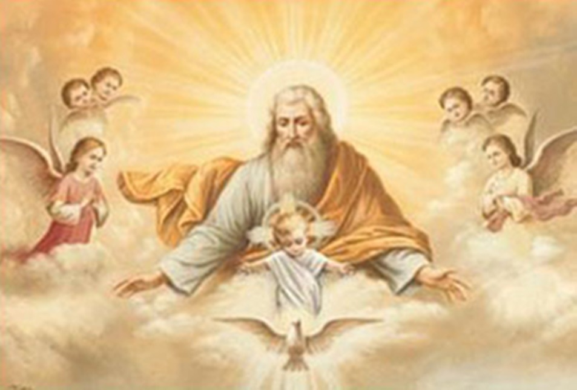
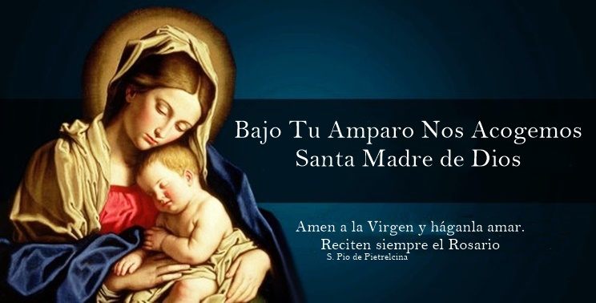
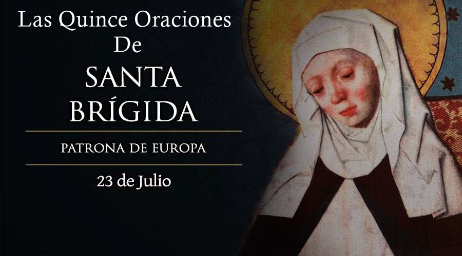
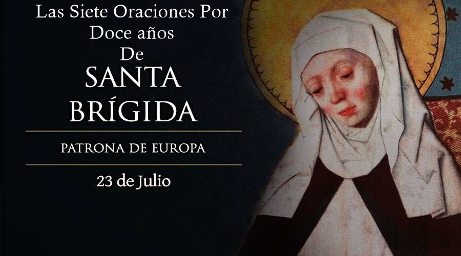
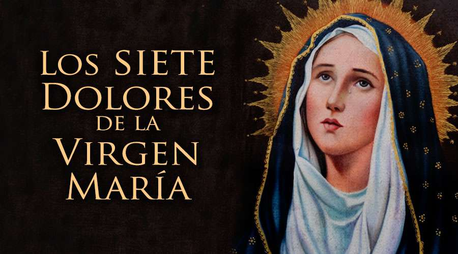
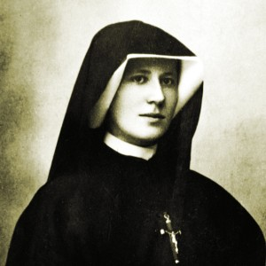
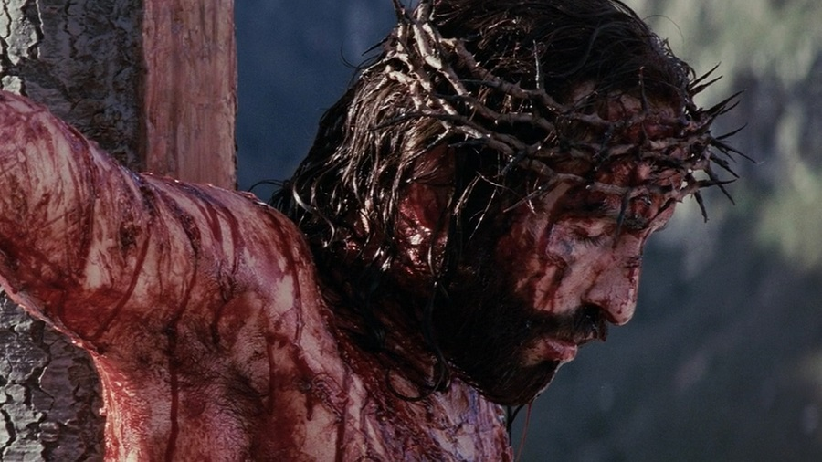
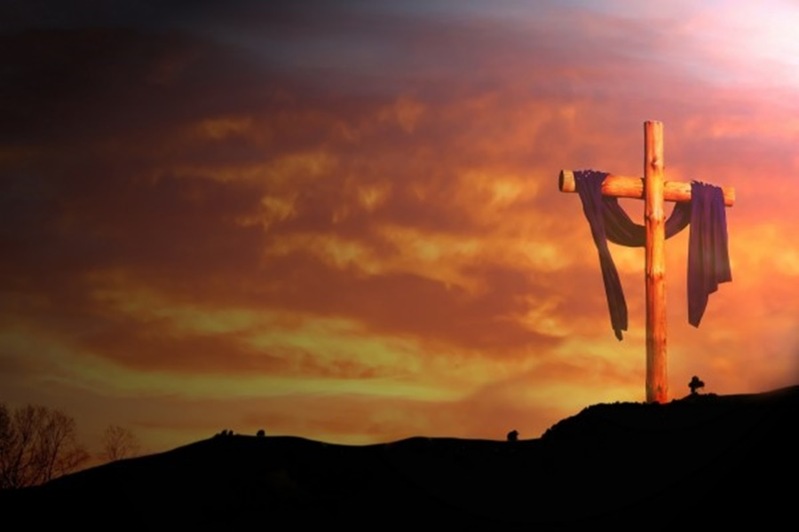

Oraciones Personales
La oración es la mejor arma que tenemos; es la llave al corazón de Dios.
Padre Pío
Rosario Al Padre Celestial

En el nombre del Padre, y del Hijo, y del Espíritu Santo. Amen
¡Oh Dios ven en nuestro auxilio!
R: Señor, apresurate a socorrerme.
Gloria al Padre, y al Hijo y al Espíritu Santo. Como era en el principio, ahora y siempre, y por los siglos de los siglos. Amén.
Padre mío, Padre Bueno, a Ti me ofrezco, a Ti me entrego. Ángel de Dios, que eres mi custodio, ilumíname, guárdame, rígeme y gobiérname ya que te fui confiado de la bondad celestial. Amen.
Primer Misterio
Se contempla el triunfo del Padre en el Jardín del Edén, cuando después del pecado de Adán y Eva, promete la venida del Salvador.
Entonces el Padre Dios dijo a la serpiente: “Por haber hecho esto, maldita seas entre todas las bestias y entre todos los animales del campo. Sobre tu vientre caminarás y polvo comerás todos los días de tu vida” – (Génesis 3, 14-15)
Un Ave María - Diez Padre Nuestros - Un Gloria Al Padre
Padre mío, padre bueno, a ti me ofrezco, a ti me entrego”. Ángel de Dios, que eres mi custodio, ilumíname, guárdame, rígeme y gobiérname ya que te fui confiado de la bondad celestial. Amen
Segundo Misterio
Se contempla el triunfo del Padre en el momento en que María dice: “FIAT” durante la Anunciación.
El Ángel le dijo: “No temas María, porque has hallado gracia delante de Dios; vas a concebir en tu seno y vas a dar a luz un Hijo, a quién pondrás por nombre Jesus. El será grande y será llamado Hijo del Altisimo, y el Señor Dios le dará el trono de David, su Padre; reinará sobre la casa de Jacob por los siglos y SU Reino no tendrá fin” – (San Lucas 1, 30-33)
Un Ave María - Diez Padre Nuestros - Un Gloria Al Padre
Padre mío, padre bueno, a ti me ofrezco, a ti me entrego”. Ángel de Dios, que eres mi custodio, ilumíname, guárdame, rígeme y gobiérname ya que te fui confiado de la bondad celestial. Amen
Tercer Misterio
Se contempla el triunfo del Padre en el huerto de Getsemaní, cuando el Padre entrega toda su fuerza al Hijo.
“Y se apartó de ellos como un tiro de piedra, y Puesto de rodillas oraba diciendo: ¡PADRE, si quieres, aparta de MI esta copa; pero no se haga MI Voluntad sino la TUYA! Entonces, Se le apareció un ángel venido del cielo que le confortaba. Y sumido en agonía, insistía más en SU oración. SU sudor se hizo como Gotas Espesas de Sangre que caían en tierra” -. (San Lucas 22, 41-44).
Un Ave María - Diez Padre Nuestros - Un Gloria Al Padre
Padre mío, padre bueno, a ti me ofrezco, a ti me entrego”. Ángel de Dios, que eres mi custodio, ilumíname, guárdame, rígeme y gobiérname ya que te fui confiado de la bondad celestial. Amen
Cuarto Misterio
Se contempla en triunfo del Padre en el momento de cada juicio particular.
Y, levantándose, partió hacia su Padre. “Estando El todavía lejos, le vio su Padre y, conmovido, corrió, se echó a su cuello y le besó efusivamente. El hijo le dijo: ¡Padre, pequé contra el Cielo y contra ti; ya no me merezco ser llamado hijo Tuyo! Pero el Padre dijo a sus siervos: ¡Traed aprisa el mejor vestido y vestidle, ponedle un anillo en su mano y unas sandalias en los pies. ¡Traed el novillo cebado, matadlo y comamos y celebremos una fiesta, porque este hijo MIO estaba muerto y ha vuelto a la vida; estaba perdido y ha sido hallado! Y comenzaron la fiesta”- (San Lucas 15, 20-24).
Un Ave María - Diez Padre Nuestros - Un Gloria Al Padre
Padre mío, padre bueno, a ti me ofrezco, a ti me entrego”. Ángel de Dios, que eres mi custodio, ilumíname, guárdame, rígeme y gobiérname ya que te fui confiado de la bondad celestial. Amen
Quinto Misterio
Se contempla el Triunfo del Padre en el momento del juicio universal.
Luego vi un cielo nuevo y una tierra nueva porque el primer cielo y la primera tierra desaparecieron, y el mar no existe ya -. Y vi la ciudad Santa, la nueva Jerusalén, que bajaba del cielo, de junto a Dios, engalanada como una novia ataviada para su esposo. Y oí una fuerte voz que decía desde el trono: “Esta es la morada de Dios con los Hombres. Pondrá su morada entre ellos y ellos serán su pueblo y el, Dios con ellos, será su Dios. Y enjugará toda lágrima de sus ojos, y no habrá ya muerte ni habrá llanto, ni gritos, ni fatigas, porque el mundo viejo ha pasado.(Apocalipsis 21, 1-4).
Un Ave María - Diez Padre Nuestros - Un Gloria Al Padre
Padre mío, padre bueno, a ti me ofrezco, a ti me entrego”. Ángel de Dios, que eres mi custodio, ilumíname, guárdame, rígeme y gobiérname ya que te fui confiado de la bondad celestial. Amen
Letanías Al Padre Celestial
Oh DIOS, PADRE del cielo.
Ten piedad de nosotros
Oh DIOS, HIJO redentor del mundo.
Ten piedad de nosotros
Oh DIOS, ESPIRITU SANTO
Ten piedad de nosotros
Santa TRINIDAD, único DIOS.
Ten piedad de nosotros
PADRE, Creador del mundo.
Ten piedad de nosotros
PADRE, Sustentador del mundo.
Ten piedad de nosotros
PADRE, Sabiduría eterna.
Ten piedad de nosotros
PADRE, Bondad infinita .
Ten piedad de nosotros
PADRE, Providencia inefable.
Ten piedad de nosotros
PADRE, Fuente de cada cosa.
Ten piedad de nosotros
PADRE, Santísimo.
Ten piedad de nosotros
PADRE, Dulcísimo.
Ten piedad de nosotros
PADRE, de infinita misericordia.
Ten piedad de nosotros
PADRE, Nuestro defensor.
Ten piedad de nosotros
PADRE, Nuestra alegría y nuestra gloria.
Ten piedad de nosotros
PADRE, Rico para todas las criaturas.
Ten piedad de nosotros
PADRE, Magnificencia de la iglesia.
Ten piedad de nosotros
PADRE, Esperanza de los cristianos.
Ten piedad de nosotros
PADRE, Perturbación de los ídolos .
Ten piedad de nosotros
PADRE, Sabiduría de los jefes.
Ten piedad de nosotros
PADRE, Consolación de los pueblos.
Ten piedad de nosotros
PADRE, Alegría de los sacerdotes.
Ten piedad de nosotros
PADRE, Guía de los hombres.
Ten piedad de nosotros
PADRE, Regalo de la vida de la familia.
Ten piedad de nosotros
PADRE, Ayuda a los miserables.
Ten piedad de nosotros
PADRE, Consuelo de los pobres.
Ten piedad de nosotros
PADRE, Guía de los jóvenes.
Ten piedad de nosotros
PADRE, Amigo de los pequeños.
Ten piedad de nosotros
PADRE, Libertad de los esclavos.
Ten piedad de nosotros
PADRE, Luz de los que están en las tinieblas.
Ten piedad de nosotros
PADRE, Destrucción de los soberbios.
Ten piedad de nosotros
PADRE, Sabiduría de los justos.
Ten piedad de nosotros
PADRE, Reposo en las tribulaciones.
Ten piedad de nosotros
PADRE, Esperanza en la desolación.
Ten piedad de nosotros
PADRE, Refugio de salvación para los desesperados.
Ten piedad de nosotros
PADRE, Alegría de los pobres.
Ten piedad de nosotros
PADRE, Puerta de salvación en los peligros.
Ten piedad de nosotros
PADRE, Paz y protección en el despojo.
Ten piedad de nosotros
PADRE, Consuelo de los afligidos.
Ten piedad de nosotros
PADRE, Refugio de los huérfanos.
Ten piedad de nosotros
PADRE, Refugio de los ancianos.
Ten piedad de nosotros
PADRE, Refugio de los moribundos.
Ten piedad de nosotros
PADRE, que en nuestra pobreza, extingues la codicia.
Ten piedad de nosotros
PADRE, Vida de los muertos.
Ten piedad de nosotros
CORDERO DE DIOS, que quitas los pecados del mundo.
Perdónanos, Señoros
CORDERO DE DIOS, que quitas los pecados del mundo.
Escúchanos, Señor
CORDERO DE DIOS, que quitas los pecados del mundo.
Ten misericordia de nosotros.
Un Ave María - Un Padre Nuestros - Un Gloria Al Padre
OREMOS: Padre infinitamente bueno y misericordioso, que deseas ardientemente extender Tu Reino de Amor en el corazón de todas tus criaturas, para Tu gozo su felicidad; Te rogamos que se cumpla esta voluntad Tuya de ser conocido, amado y honrado por todos los hombres; y que todas nuestras familias estén unidas en tu paz.
Te lo pedimos por Jesucristo Tu Hijo nuestro señor, por intercesión de María Santísima y de todos los Santos.
Amén.
¡PADRE! Donde quiera que yo vaya, Te encuentre. Donde quiera que yo mire, Te vea. Donde quiera que te busque, allí estés. Donde quiera que Te hable, me respondas. Donde quiera que Te ruegue, me escuches. Donde quiera Tú eres mi Dios, mi Todo. Donde quiera Te encuentro, Te amo. "¡Levántense y bendigan a Yahvé, Desde siempre y para siempre. Bendito sea su Nombre Glorioso Que sobre pasa toda bendición y alabanza!" (Sor Eugenia E. Ravasio)
Acto de abandono al padre
Padre me pongo en tus manos, has de mí lo que quieras, sea lo que sea, te doy las gracias. Estoy dispuesto a todo, lo acepto todo, con tal que tu voluntad se cumpla en mí, y en todas tus criaturas, no deseo nada más, Padre.
Te confío mi alma, te la doy, te la entrego, con todo el amor de que soy capaz, porque te amo. Y necesito darme a ti, ponerme en tus manos sin medida, con una confianza infinita, porque tú eres mi Padre.
Amén.
Promesas
1. Él promete que por cada Padre Nuestro que sea rezado, decenas de almas se salvarán de la condenación eterna y decenas de almas serán libradas de las penas del purgatorio.
2. Dios Padre concederá gracias muy particulares a las familias que oren este Santo Rosario y transmitirá estas gracias de generación en generación.
3. A todos aquellos que lo oren con fe, hará grandes milagros, tales y tan grandes que "no se han visto jamás" en Historia de la Iglesia".
El Santo Rosario

Recomendaciones
Meditamos en el corazón, como María. Con ella vamos a Jesús para entregamos al Padre. A medida que decimos las oraciones vocales, vamos pensando en los principales misterios de nuestra Redención.
Según la tradición, la reflexión de los misterios es la parte del rosario que la Virgen le explicó a Sto. Domingo con mucho cuidado. Cuando pensamos en Jesús, meditando los misterios de la revelación, profundizamos nuestra fe y valoramos lo que El ha hecho por nosotros. La mejor forma de lograr esa meditación es hacerla con Su Santísima Madre, la Virgen María. Empezamos a comprender, a la vez, el gran papel que juega María en nuestra Redención. Los misterios del rosario nos acercan más a Jesús y a María.
Oracióne iniciales
Señal de la cruz
Por la señal de la Santa Cruz, de nuestros enemigos líbranos Señor, Dios nuestro. En el nombre del Padre, y del Hijo, y del Espíritu Santo. Amén.
Ven Espíritu Santo, ven por medio de la poderosa intercesión del Inmaculado Corazón de la santisima virgen María tu amadísima esposa (3 veces).
Credo de los Apóstoles
Creo en Dios, Padre Todopoderoso, Creador del cielo y de la tierra. Creo en Jesucristo, su único Hijo, Nuestro Señor, que fue concebido por obra y gracia del Espíritu Santo; nació de Santa María Virgen; padeció bajo el poder de Poncio Pilato; fue crucificado, muerto y sepultado; descendió a los infiernos; al tercer día resucitó de entre los muertos, subió a los cielos y está sentado a la derecha de Dios, Padre todopoderoso.
Desde allí ha de venir a juzgar a los vivos y a los muertos.
Creo en el Espíritu Santo, la Santa Iglesia Católica, la comunión de los santos, el perdón de los pecados, la resurrección de la carne y la vida eterna. Amén.
Cierre sus ojos un instante y recuerde todas las cosas (hechos, palabras, pensamientos, omisión) con que ha ofendido al Señor. Profundamente arrepentido diga:
¡Señor mío Jesucristo!, Dios y Hombre verdadero, Creador Padre y Redentor mío; por ser vos quien sois y porque os amo sobre todas las cosas, me pesa de todo corazón haberte ofendido y no haberte amado. Propongo firmemente no volver a pecar, confesarme y cumplir la penitencia que me fuere impuesta. Te ofrezco mi vida, obras y trabajos, en satisfacción de todos mis pecados. Así como os lo suplico, así espero y confío, que en vuestra bondad y misericordia infinita me los perdonaréis y me daréis gracia para enmendarme y para perseverar en vuestro santo servicio, hasta el fin de mis días. Amén.
Ofrecimiento del Rosario
- En honor y gloria a la Santísima Trinidad.
- En agradecimiento por los beneficios recibidos.
- Por las Benditas Almas del Purgatorio
- Por el Papa y la Santa Madre Iglesia Católica; por los sacerdotes y en especial por el sacerdote que hemos adoptado.
- En expiación y reparación por todos nuestros pecados y los del mundo entero.
- Por la conversión de los pecadores y por nuestro Celo Apostólico.
- Por los agonizantes, encarcelados y enfermos.
- Para pedir las virtudes de la humildad, pureza, obediencia, fidelidad,sabiduria, oración y la caridad.
- Por todos directores y futuros directores de nuestra comunidad.
- Por la paz del mundo y en especial, la de nuestro país.
- Por la perseverancia de los que han sido evangelizados para que el Señor les infunda Celo Apostólico y suscite vocaciones santas.
- Por todos los servidores públicos y gobernantes.
- Por las intenciones del Inmaculado Corazón de María y súplicas e intenciones personales.
1. Misterios Gozosos (Lunes Y Sábado)
1. La Encarnación del Hijo de Dios
(Lucas 1, 26-38)
“Al sexto mes fue enviado por Dios el ángel Gabriel a una ciudad de Galilea, llamada Nazaret,
a una virgen desposada con un hombre llamado José, de la casa de David; el nombre de la virgen era María.
Y entrando, le dijo:
Alégrate, llena de gracia, el Señor está contigo.
María se sorprendió de estas palabras, y se preguntaba qué significaría aquel saludo.
El ángel le dijo:
No temas, María, porque has hallado gracia delante de Dios;
vas a concebir en el seno y vas a dar a luz un hijo, a quien pondrás por nombre Jesús.
El será grande y será llamado Hijo del Altísimo, y el Señor Dios le dará el trono de David, su padre;
reinará sobre la casa de Jacob por los siglos y su reino no tendrá fin.
María respondió al ángel:
¿Cómo será esto, puesto que no conozco varón?
El ángel le respondió:
El Espíritu Santo vendrá sobre ti y el poder del Altísimo te cubrirá con su sombra; por eso el que ha de nacer será santo y será llamado Hijo de Dios.
Mira, también Isabel, tu pariente, ha concebido un hijo en su vejez, y este es ya el sexto mes de aquella que llamaban estéril,
porque ninguna cosa es imposible para Dios.
Dijo María:
He aquí la esclava del Señor; hágase en mí según tu palabra. palabra.”
1 Padre Nuestro, 10 Avemaría, 1 Gloria
Se rezan las siguientes jaculatorias
María es
Madre de gracia y Madre de misericordia.
En la vida y en la muerte, ampáranos Madre Nuestra.
Sea amado y adorado en todo momento Jesús en el Santísimo Sacramento.
¡Oh Jesús mío perdona nuestros pecados, líbranos del fuego del Infierno, lleva al Cielo a todas las almas y especialmente a las más necesitadas de tu misericordia!
El Rosario de María nos libre de todo mal, alabemos noche y día a la Reina Celestial.
Ven divina voluntad, ven a reinar en los corazones del mundo entero. Amén.
2.La Visita de María a Santa Isabel
(Lucas 1, 39-56)
“ En aquellos días, se puso en camino María y se fue con prontitud a la región montañosa, a una ciudad de Judá;
entró en casa de Zacarías y saludó a Isabel.
En cuanto oyó Isabel el saludo de María, saltó de gozo el niño en su seno, Isabel quedó llena de Espíritu Santo
y exclamó a gritos:
"Bendita tú entre las mujeres y bendito el fruto de tu seno;
y ¿de dónde a mí que venga a verme la madre de mi Señor?
Porque apenas llegó a mis oídos la voz de tu saludo, saltó de gozo el niño en mi seno.
Feliz la que ha creído que se cumplirían las cosas que le fueron dichas de parte del Señor!"
Y dijo María:
"Alaba mi alma la grandeza del Señor
y mi espíritu se alegra en Dios mi salvador
porque ha puesto los ojos en la pequeñez de su esclava, por eso desde ahora todas las generaciones me llamarán bienaventurada,
porque ha hecho en mi favor cosas grandes el Poderoso, Santo es su nombre
y su misericordia alcanza de generación en generación a los que le temen.
Desplegó la fuerza de su brazo, dispersó a los de corazón altanero.
Derribó a los potentados de sus tronos y exaltó a los humildes.
A los hambrientos colmó de bienes y despidió a los ricos con las manos vacías.
Acogió a Israel, su siervo, acordándose de la misericordia
como había anunciado a nuestros padres en favor de Abrahán y de su linaje por los siglos."
María se quedó con ella unos tres meses, y luego se volvió a su casa. ”
1 Padre Nuestro, 10 Avemaría, 1 Gloria
Se rezan las siguientes jaculatorias
María es
Madre de gracia y Madre de misericordia.
En la vida y en la muerte, ampáranos Madre Nuestra.
Sea amado y adorado en todo momento Jesús en el Santísimo Sacramento.
¡Oh Jesús mío perdona nuestros pecados, líbranos del fuego del Infierno, lleva al Cielo a todas las almas y especialmente a las más necesitadas de tu misericordia!
El Rosario de María nos libre de todo mal, alabemos noche y día a la Reina Celestial.
Ven divina voluntad, ven a reinar en los corazones del mundo entero. Amén.
3.El Nacimiento del Niño Jesús
(Lucas 2, 1-20)
“ Por aquellos días salió un edicto de César Augusto ordenando que se empadronase todo el mundo.
Este primer empadronamiento tuvo lugar siendo gobernador de Siria Cirino.
Iban todos a empadronarse, cada uno a su ciudad.
Subió también José desde Galilea, de la ciudad de Nazaret, a Judea, a la ciudad de David, que se llama Belén, por ser él de la casa y familia de David,
para empadronarse con María, su esposa, que estaba encinta.
Mientras estaban allí, se le cumplieron los días del alumbramiento
y dio a luz a su hijo primogénito, le envolvió en pañales y le acostó en un pesebre, porque no tenían sitio en el albergue.
Había en la misma comarca unos pastores, que dormían al raso y vigilaban por turno durante la noche su rebaño.
Se les presentó el ángel del Señor, la gloria del Señor los envolvió en su luz y se llenaron de temor.
El ángel les dijo:
"No temáis, pues os anuncio una gran alegría, que lo será para todo el pueblo:
os ha nacido hoy, en la ciudad de David, un salvador, que es el Cristo Señor;
y esto os servirá de señal: encontraréis un niño envuelto en pañales y acostado en un pesebre."
Y de pronto se juntó con el ángel una multitud del ejército celestial que alababa a Dios diciendo:
"Gloria a Dios en las alturas y en la tierra paz a los hombres en quienes él se complace."
Cuando los ángeles los dejaron y se fueron al cielo, los pastores se decían unos a otros:
"Vamos a Belén a ver lo que ha sucedido y el Señor nos ha manifestado."
Fueron a toda prisa y encontraron a María y a José, y al niño acostado en el pesebre.
Al verlo, contaron lo que les habían dicho acerca de aquel niño;
y todos los que lo oyeron se maravillaban de lo que los pastores les decían.
María, por su parte, guardaba todas estas cosas y las meditaba en su corazón.
Los pastores se volvieron glorificando y alabando a Dios por todo lo que habían oído y visto, tal como se les había dicho.”
1 Padre Nuestro, 10 Avemaría, 1 Gloria
Se rezan las siguientes jaculatorias
María es
Madre de gracia y Madre de misericordia.
En la vida y en la muerte, ampáranos Madre Nuestra.
Sea amado y adorado en todo momento Jesús en el Santísimo Sacramento.
¡Oh Jesús mío perdona nuestros pecados, líbranos del fuego del Infierno, lleva al Cielo a todas las almas y especialmente a las más necesitadas de tu misericordia!
El Rosario de María nos libre de todo mal, alabemos noche y día a la Reina Celestial.
Ven divina voluntad, ven a reinar en los corazones del mundo entero. Amén.
4.La Presentación de Jesús en el templo
(Lucas 2, 22-35)
“Cuando se cumplieron los días en que debían purificarse, según la Ley de Moisés, llevaron a Jesús a Jerusalén para presentarle al Señor,
como está escrito en la Ley del Señor: Todo varón primogénito será consagrado al Señor
y para ofrecer en sacrificio un par de tórtolas o dos pichones, conforme a lo que se dice en la Ley del Señor.
Vivía entonces en Jerusalén un hombre llamado Simeón. Era un hombre justo y piadoso, y esperaba la consolación de Israel; y estaba en él el Espíritu Santo.
El Espíritu Santo le había revelado que no vería la muerte antes de haber visto al Cristo del Señor.
Movido por el Espíritu, vino al Templo; y cuando los padres introdujeron al niño Jesús, para cumplir lo que la Ley prescribía sobre él,
le tomó en brazos y bendijo a Dios diciendo:
"Ahora, Señor, puedes, según tu palabra, dejar que tu siervo se vaya en paz;
porque han visto mis ojos tu salvación,
la que has preparado a la vista de todos los pueblos,
luz para iluminar a las gentes y gloria de tu pueblo Israel."
Su padre y su madre estaban admirados de lo que se decía de él.
Simeón les bendijo y dijo a María, su madre:
"Éste está puesto para caída y elevación de muchos en Israel, y como signo de contradicción
¡y a ti misma una espada te atravesará el alma!- a fin de que queden al descubierto las intenciones de muchos corazones." ”
1 Padre Nuestro, 10 Avemaría, 1 Gloria
Se rezan las siguientes jaculatorias
María es
Madre de gracia y Madre de misericordia.
En la vida y en la muerte, ampáranos Madre Nuestra.
Sea amado y adorado en todo momento Jesús en el Santísimo Sacramento.
¡Oh Jesús mío perdona nuestros pecados, líbranos del fuego del Infierno, lleva al Cielo a todas las almas y especialmente a las más necesitadas de tu misericordia!
El Rosario de María nos libre de todo mal, alabemos noche y día a la Reina Celestial.
Ven divina voluntad, ven a reinar en los corazones del mundo entero. Amén.
5.El Niño Jesús perdido y hallado en el templo
(Lucas 2, 41-52)
“Sus padres iban todos los años a Jerusalén a la fiesta de la Pascua.
Cuando cumplió los doce años, subieron como de costumbre a la fiesta.
Al volverse ellos pasados los días, el niño Jesús se quedó en Jerusalén, sin saberlo su padres.
Creyendo que estaría en la caravana, hicieron un día de camino, y le buscaban entre los parientes y conocidos;
pero, al no encontrarle, se volvieron a Jerusalén en su busca.
Al cabo de tres días, le encontraron en el Templo sentado en medio de los maestros, escuchándoles y haciéndoles preguntas;
todos los que le oían, estaban estupefactos por su inteligencia y sus respuestas.
Cuando le vieron quedaron sorprendidos y su madre le dijo:
"Hijo, ¿por qué nos has hecho esto? Mira, tu padre y yo, angustiados, te andábamos buscando."
Él les dijo:
"Y ¿por qué me buscabais? ¿No sabíais que yo debía estar en la casa de mi Padre?"
Pero ellos no comprendieron la respuesta que les dio.
Bajó con ellos, vino a Nazaret y vivía sujeto a ellos. Su madre conservaba cuidadosamente todas las cosas en su corazón.
Jesús crecía en sabiduría, en estatura y en gracia ante Dios y ante los hombres.”
1 Padre Nuestro, 10 Avemaría, 1 Gloria
Se rezan las siguientes jaculatorias
María es
Madre de gracia y Madre de misericordia.
En la vida y en la muerte, ampáranos Madre Nuestra.
Sea amado y adorado en todo momento Jesús en el Santísimo Sacramento.
¡Oh Jesús mío perdona nuestros pecados, líbranos del fuego del Infierno, lleva al Cielo a todas las almas y especialmente a las más necesitadas de tu misericordia!
El Rosario de María nos libre de todo mal, alabemos noche y día a la Reina Celestial.
Ven divina voluntad, ven a reinar en los corazones del mundo entero. Amén.
2.Misterios Luminosos (Jueves)
1. El Bautismo de Jesús en el Jordán
(Mt 3,13-17)
“Por entonces se presentó Jesús, que venía de Galilea al Jordán, a donde Juan, para ser bautizado por él. Pero Juan trataba de impedírselo y le decía:
«Soy yo el que necesita ser bautizado por ti, ¿y vienes tú donde mí?»
Jesús le respondió:
«Deja ahora, pues conviene que así cumplamos toda justicia ante Dios.» Entonces le dejó.
Una vez bautizado Jesús, salió del agua. En esto se abrieron los cielos y vio al Espíritu de Dios que bajaba como una paloma y venía sobre él. Y una voz que salía de los cielos decía: «Éste es mi Hijo amado, en quien me complazco.»”
1 Padre Nuestro, 10 Avemaría, 1 Gloria
Se rezan las siguientes jaculatorias
María es
Madre de gracia y Madre de misericordia.
En la vida y en la muerte, ampáranos Madre Nuestra.
Sea amado y adorado en todo momento Jesús en el Santísimo Sacramento.
¡Oh Jesús mío perdona nuestros pecados, líbranos del fuego del Infierno, lleva al Cielo a todas las almas y especialmente a las más necesitadas de tu misericordia!
El Rosario de María nos libre de todo mal, alabemos noche y día a la Reina Celestial.
Ven divina voluntad, ven a reinar en los corazones del mundo entero. Amén.
2.La Autorevelación de Jesús en las bodas de Caná
(Jn 2,1-11)
“ Tres días después se celebraba una boda en Caná de Galilea, y estaba allí la madre de Jesús. Fueron invitados también a la boda Jesús y sus discípulos. Al quedarse sin vino, por haberse acabado el de la boda, le dijo a Jesús su madre:
«No tienen vino.»
Jesús le respondió:
«¿Qué tengo yo contigo, mujer? Todavía no ha llegado mi hora.»
Pero su madre dijo a los sirvientes:
«Haced lo que él os diga.»
Había allí seis tinajas de piedra, destinadas a las purificaciones de los judíos, de dos o tres medidas cada una. Jesús les dijo:
«Llenad las tinajas de agua.»
Ellos las llenaron hasta arriba. «Sacadlo ahora les dijo y llevadlo al maestresala.»
Ellos lo llevaron. Cuando el maestresala probó el agua convertida en vino, como ignoraba de dónde era (los sirvientes, los que habían sacado el agua, sí que lo sabían), llamó al novio y le dijo:
«Todos sirven primero el vino bueno, y cuando ya están bebidos, el inferior. Tú, en cambio, has reservado el vino bueno hasta ahora.»
Éste fue el comienzo de los signos que realizó Jesús, en Caná de Galilea; así manifestó su gloria y creyeron en él sus discípulos. ”
1 Padre Nuestro, 10 Avemaría, 1 Gloria
Se rezan las siguientes jaculatorias
María es
Madre de gracia y Madre de misericordia.
En la vida y en la muerte, ampáranos Madre Nuestra.
Sea amado y adorado en todo momento Jesús en el Santísimo Sacramento.
¡Oh Jesús mío perdona nuestros pecados, líbranos del fuego del Infierno, lleva al Cielo a todas las almas y especialmente a las más necesitadas de tu misericordia!
El Rosario de María nos libre de todo mal, alabemos noche y día a la Reina Celestial.
Ven divina voluntad, ven a reinar en los corazones del mundo entero. Amén.
3.El Anuncio del Reino de Dios invitando a la Conversión
(Mt 5,1-48)
“Viendo a la muchedumbre, subió al monte y se sentó. Sus discípulos se le
acercaron. Entonces, tomando la palabra, les enseñaba así:
«Bienaventurados los pobres de espíritu,
porque de ellos es el Reino de los Cielos.
Bienaventurados los mansos,
porque ellos poseerán en herencia la tierra.
Bienaventurados los que lloran,
porque ellos serán consolados.
Bienaventurados los que tienen hambre y sed de la justicia,
porque ellos serán saciados.
Bienaventurados los misericordiosos,
porque ellos alcanzarán misericordia.
Bienaventurados los limpios de corazón,
porque ellos verán a Dios.
Bienaventurados los que trabajan por la paz,
porque ellos serán llamados hijos de Dios.
Bienaventurados los perseguidos por causa de la justicia,
porque de ellos es el Reino de los Cielos.
Bienaventurados seréis cuando os injurien y os persigan, y cuando, por mi causa, os acusen en falso de toda clase de males. Alegraos y regocijaos, porque vuestra recompensa será grande en los cielos; pues de la misma manera persiguieron a los profetas anteriores a vosotros.
«Vosotros sois la sal de la tierra. Mas si la sal se desvirtúa, ¿con qué se la salará?
Ya no sirve para nada más que para ser tirada afuera y pisoteada por los hombres.
«Vosotros sois la luz del mundo. No puede ocultarse una ciudad situada en la
cima de un monte. Ni tampoco se enciende una lámpara para ponerla debajo del
celemín, sino en el candelero, para que alumbre a todos los que están en la casa. Brille
así vuestra luz delante de los hombres, para que vean vuestras buenas obras y alaben a
vuestro Padre que está en los cielos.
«No penséis que he venido a abolir la Ley y los Profetas. No he venido a
abolirlos, sino a darles cumplimiento. Os aseguro que, mientras duren el cielo y la
tierra, no dejará de estar vigente ni una i ni una tilde de la ley hasta que todo suceda. Por
tanto, el que no dé importancia a uno de estos mandamientos más pequeños y así lo enseñe
a los hombres, será el más pequeño en el Reino de los Cielos; en cambio, el que los observe
y los enseñe, ése será grande en el Reino de los Cielos.
«Porque os digo que, si vuestra justicia no es mayor que la de los escribas y
fariseos, no entraréis en el Reino de los Cielos.
«Habéis oído que se dijo a los antepasados: No matarás, pues el que mate será
reo ante el tribunal. Pues yo os digo que todo aquel que se encolerice contra su hermano
será reo ante el tribunal; el que llame a su hermano "imbécil" será reo ante el Sanedrín; y
el que le llame ‘renegado’ será reo del fuego del infierno.
Entonces, si al momento de
presentar tu ofrenda en el altar te acuerdas de que tu hermano tiene algo contra ti, deja tu
ofrenda allí, delante del altar, y vete primero a reconciliarte con tu hermano. Luego vuelves
y presentas tu ofrenda.
Ponte enseguida a buenas con tu adversario mientras vas con él de
camino, no sea que tu adversario te entregue al juez y el juez al guardia, y te metan en la
cárcel. Yo te aseguro que no saldrás de allí hasta que no hayas pagado el último céntimo.
«Habéis oído que se dijo: No cometerás adulterio. Pues yo os digo que todo el
que mira con deseo a una mujer ya cometió adulterio con ella en su corazón.
Por tanto, si
tu ojo derecho te es ocasión de tropiezo, sácatelo y arrójalo de ti; más te conviene que se
pierda uno de tus miembros, que no que todo tu cuerpo sea arrojado a la Gehenna. Y si tu
mano derecha te es ocasión de tropiezo, córtatela y arrójala de ti; te conviene que se pierda
uno de tus miembros, antes que todo tu cuerpo vaya al infierno.
«También se dijo: El que repudie a su mujer, que le dé acta de divorcio. Pero
yo os digo que todo aquel que repudia a su mujer excepto en caso de fornicación la
hace ser adúltera; y el que se case con una repudiada comete adulterio.
«Habéis oído también que se dijo a los antepasados: No perjurarás, sino que
cumplirás al Señor tus juramentos. Pues yo os digo que no juréis en modo alguno: ni por
el Cielo, porque es el trono de Dios; ni por la Tierra, porque es el estrado de sus pies; ni
por Jerusalén, porque es la ciudad del gran rey. Ni tampoco jures por tu cabeza, porque ni
a uno solo de tus cabellos puedes hacerlo blanco o negro. Limitaos a decir: ‘Sí, sí’ ‘no,
no’, pues lo que pasa de aquí proviene del Maligno.
«Habéis oído que se dijo: Ojo por ojo y diente por diente. Pues yo os digo que
no resistáis al mal; antes bien, al que te abofetee en la mejilla derecha ofrécele también la
otra; al que quiera pleitear contigo para quitarte la túnica déjale también el manto; y
al que te obligue a andar una milla vete con él dos. A quien te pida da, y no vuelvas la
espalda al que desee que le prestes algo.
«Habéis oído que se dijo: Amarás a tu prójimo y odiarás a tu enemigo. Pues
yo os digo: Amad a vuestros enemigos y rogad por los que os persigan, para que seáis
hijos de vuestro Padre celestial, que hace salir su sol sobre malos y buenos, y llover sobre
justos e injustos. Porque si amáis a los que os aman, ¿qué recompensa vais a tener? ¿No
hacen eso mismo también los publicanos? Y si no saludáis más que a vuestros
hermanos, ¿qué hacéis de particular? ¿No hacen eso mismo también los paganos?
Vosotros, pues, sed perfectos como es perfecto vuestro Padre del cielo.”
1 Padre Nuestro, 10 Avemaría, 1 Gloria
Se rezan las siguientes jaculatorias
María es
Madre de gracia y Madre de misericordia.
En la vida y en la muerte, ampáranos Madre Nuestra.
Sea amado y adorado en todo momento Jesús en el Santísimo Sacramento.
¡Oh Jesús mío perdona nuestros pecados, líbranos del fuego del Infierno, lleva al Cielo a todas las almas y especialmente a las más necesitadas de tu misericordia!
El Rosario de María nos libre de todo mal, alabemos noche y día a la Reina Celestial.
Ven divina voluntad, ven a reinar en los corazones del mundo entero. Amén.
4.La Transfiguración del Señor
(Mt 17,1-13)
“ Seis días después, tomó Jesús consigo a Pedro, a Santiago y a su hermano
Juan, y los llevó aparte, a un monte alto. Y se transfiguró delante de ellos: su rostro se
puso brillante como el sol y sus vestidos se volvieron blancos como la luz. En esto, se les
aparecieron Moisés y Elías, que conversaban con él. Tomó Pedro la palabra y dijo a Jesús:
«Señor, está bien que nos quedemos aquí. Si quieres, haré aquí tres tiendas, una para ti,
otra para Moisés y otra para Elías.»
Todavía estaba hablando, cuando una nube luminosa
los cubrió con su sombra, y salió de la nube una voz que decía: «Éste es mi Hijo amado, en
quien me complazco; escuchadle.»
Al oír esto los discípulos, cayeron rostro en tierra
llenos de miedo. Mas Jesús, acercándose a ellos, los tocó y dijo:
«Levantaos, no tengáis miedo.»
Ellos alzaron sus ojos y no vieron a nadie más que a Jesús.
Cuando bajaban del monte, Jesús les ordenó:
«No contéis a nadie la visión, hasta
que el Hijo del hombre haya resucitado de entre los muertos.»
Sus discípulos le preguntaron:
«¿Por qué, pues, dicen los escribas que Elías debe venir primero?»
Respondió él:
«Ciertamente, Elías ha de venir a restaurarlo todo. Os digo, sin embargo,
que Elías vino ya, pero no le reconocieron, sino que hicieron con él cuanto quisieron. Así
también el Hijo del hombre tendrá que padecer de parte de ellos.»
Entonces los discípulos entendieron que se refería a Juan el Bautista.”
1 Padre Nuestro, 10 Avemaría, 1 Gloria
Se rezan las siguientes jaculatorias
María es
Madre de gracia y Madre de misericordia.
En la vida y en la muerte, ampáranos Madre Nuestra.
Sea amado y adorado en todo momento Jesús en el Santísimo Sacramento.
¡Oh Jesús mío perdona nuestros pecados, líbranos del fuego del Infierno, lleva al Cielo a todas las almas y especialmente a las más necesitadas de tu misericordia!
El Rosario de María nos libre de todo mal, alabemos noche y día a la Reina Celestial.
Ven divina voluntad, ven a reinar en los corazones del mundo entero. Amén.
5.La Institución de la Santa Eucaristía
(Mt 26,26-29 - Juan 6,53-56)
“Mientras estaban comiendo, tomó Jesús pan y lo bendijo, lo partió y, dándoselo a sus discípulos, dijo:
«Tomad, comed, éste es mi cuerpo.»
Tomó luego una copa y,
después de dar las gracias, se la pasó diciendo:
«Bebed de ella todos, porque ésta es mi
sangre de la Alianza, que es derramada por muchos para perdón de los pecados. Y os digo que desde ahora no beberé de este producto de la vid hasta el día aquel en que lo beba
con vosotros, nuevo, en el Reino de mi Padre.»
Jesús les dijo:
«En verdad, en verdad os digo
que si no coméis la carne
del Hijo del hombre,
y no bebéis su sangre,
no tenéis vida en vosotros.
El que come mi carne y bebe mi sangre
tiene vida eterna,
y yo le resucitaré el último día.
Porque mi carne es verdadera comida y mi sangre verdadera bebida.
El que come mi carne y bebe mi sangre
permanece en mí, y yo en él. ”
1 Padre Nuestro, 10 Avemaría, 1 Gloria
Se rezan las siguientes jaculatorias
María es
Madre de gracia y Madre de misericordia.
En la vida y en la muerte, ampáranos Madre Nuestra.
Sea amado y adorado en todo momento Jesús en el Santísimo Sacramento.
¡Oh Jesús mío perdona nuestros pecados, líbranos del fuego del Infierno, lleva al Cielo a todas las almas y especialmente a las más necesitadas de tu misericordia!
El Rosario de María nos libre de todo mal, alabemos noche y día a la Reina Celestial.
Ven divina voluntad, ven a reinar en los corazones del mundo entero. Amén.
3.Misterios Dolorosos (Martes Y Viernes)
1.La Oración de Jesús en el Huerto
(Lc 22,39-48)
“Luego salió Jesús y, como de costumbre, fue al monte de los Olivos. Los discípulos le
siguieron. Llegado al lugar, les dijo:
«Pedid que no caigáis en tentación.»
Se apartó de ellos como un tiro de piedra y, puesto de rodillas, oraba así:
«Padre, si quieres, aparta de mí esta copa; pero no se haga mi voluntad, sino la tuya.»
Entonces se le apareció un ángel venido del cielo que le confortaba. Y sumido en agonía,
insistía más en su oración.
Su sudor se hizo como gotas espesas de sangre que caían en
tierra.
Levantándose de la oración, vino donde los discípulos y los encontró dormidos
por la tristeza. Les dijo:
«¿Cómo es que estáis dormidos? Levantaos y orad para que no
caigáis en tentación.»
Estaba todavía hablando, cuando se presentó un grupo, encabezado por el llamado
Judas, uno de los Doce, que se acercó a Jesús para darle un beso.
Jesús le dijo:
«¡Judas, con un beso entregas al Hijo del hombre!» ”
1 Padre Nuestro, 10 Avemaría, 1 Gloria
Se rezan las siguientes jaculatorias
María es
Madre de gracia y Madre de misericordia.
En la vida y en la muerte, ampáranos Madre Nuestra.
Sea amado y adorado en todo momento Jesús en el Santísimo Sacramento.
¡Oh Jesús mío perdona nuestros pecados, líbranos del fuego del Infierno, lleva al Cielo a todas las almas y especialmente a las más necesitadas de tu misericordia!
El Rosario de María nos libre de todo mal, alabemos noche y día a la Reina Celestial.
Ven divina voluntad, ven a reinar en los corazones del mundo entero. Amén.
2.La Flagelación del Señor
(Mc 15,6-15)
“Durante la Fiesta, Pilatos les concedía la libertad de un preso, el que pidieran. Había uno,
llamado Barrabás, que estaba encarcelado con aquellos sediciosos que en el motín habían
cometido un asesinato. Subió la gente* y se puso a pedir lo que les solía conceder. Pilato
les contestó:
«¿Queréis que os suelte al rey de los judíos?»
(pues se daba cuenta de que
los sumos sacerdotes lo habían entregado por envidia). Pero los sumos sacerdotes
incitaron a la gente a que pidiesen más bien la libertad de Barrabás.
Pilato insistió:
«¿Y qué voy a hacer con el que llamáis el rey de los judíos?»
La gente volvió a gritar:
«¡Crucifícalo!»
Pilato les dijo:
«Pero ¿qué mal ha hecho?»
Mas ellos gritaron con más
fuerza:
«¡Crucifícalo!»
Pilato, entonces, queriendo complacer a la gente, les soltó a
Barrabás. Y a Jesús, después de azotarle, lo entregó para que fuera crucificado.”
1 Padre Nuestro, 10 Avemaría, 1 Gloria
Se rezan las siguientes jaculatorias
María es
Madre de gracia y Madre de misericordia.
En la vida y en la muerte, ampáranos Madre Nuestra.
Sea amado y adorado en todo momento Jesús en el Santísimo Sacramento.
¡Oh Jesús mío perdona nuestros pecados, líbranos del fuego del Infierno, lleva al Cielo a todas las almas y especialmente a las más necesitadas de tu misericordia!
El Rosario de María nos libre de todo mal, alabemos noche y día a la Reina Celestial.
Ven divina voluntad, ven a reinar en los corazones del mundo entero. Amén.
3.La Coronación de espinas
(Mt 27,27-31)
“Entonces los soldados del procurador llevaron consigo a Jesús al pretorio y
reunieron alrededor de él a toda la cohorte. Lo desnudaron y le echaron encima un manto
de púrpura; trenzaron una corona de espinas y se la colocaron en la cabeza, y le
pusieron en la mano derecha una caña; después, doblando la rodilla delante de él, le hacían
burla, diciendo:
«¡Salve, Rey de los judíos!»
y, tras escupirle, cogieron la caña y le
golpeaban en la cabeza. Cuando se hubieron burlado de él, le quitaron el manto, le
pusieron sus ropas y lo llevaron a crucificarlo.”
1 Padre Nuestro, 10 Avemaría, 1 Gloria
Se rezan las siguientes jaculatorias
María es
Madre de gracia y Madre de misericordia.
En la vida y en la muerte, ampáranos Madre Nuestra.
Sea amado y adorado en todo momento Jesús en el Santísimo Sacramento.
¡Oh Jesús mío perdona nuestros pecados, líbranos del fuego del Infierno, lleva al Cielo a todas las almas y especialmente a las más necesitadas de tu misericordia!
El Rosario de María nos libre de todo mal, alabemos noche y día a la Reina Celestial.
Ven divina voluntad, ven a reinar en los corazones del mundo entero. Amén.
4.Jesús con la Cruz a cuestas
(Lc 23,26-31)
“Cuando lo llevaban, echaron mano de un cierto Simón de Cirene, que venía del
campo, y le cargaron la cruz para que la llevara detrás de Jesús.
Le seguía una gran
multitud del pueblo y mujeres que se dolían y se lamentaban por él. Jesús se volvió a
ellas y les dijo:
«Hijas de Jerusalén, no lloréis por mí; llorad más bien por vosotras y por
vuestros hijos. Porque llegarán días en que se dirá: ¡Dichosas las estériles, las entrañas
que no engendraron y los pechos que no criaron! Entonces se pondrán a decir a los
montes: ¡Caed sobre nosotros! Y a las colinas: ¡Sepultadnos! Porque si hacen esto con el
leño verde, ¿qué no se hará con el seco? ”
1 Padre Nuestro, 10 Avemaría, 1 Gloria
Se rezan las siguientes jaculatorias
María es
Madre de gracia y Madre de misericordia.
En la vida y en la muerte, ampáranos Madre Nuestra.
Sea amado y adorado en todo momento Jesús en el Santísimo Sacramento.
¡Oh Jesús mío perdona nuestros pecados, líbranos del fuego del Infierno, lleva al Cielo a todas las almas y especialmente a las más necesitadas de tu misericordia!
El Rosario de María nos libre de todo mal, alabemos noche y día a la Reina Celestial.
Ven divina voluntad, ven a reinar en los corazones del mundo entero. Amén.
5.La Crucifixión del Señor
(Lc 23,32-46)
“Llevaban además a otros dos malhechores
para ejecutarlos con él.
La Crucifixión.
Llegados al lugar llamado Calvario, lo crucificaron allí junto con los
malhechores, uno a la derecha y otro a la izquierda. Jesús decía:
«Padre, perdónalos,
porque no saben lo que hacen.»
Los soldados se repartieron sus vestidos, echándolos a suertes.
La gente estaba mirando. Los magisrados, por su parte, hacían muecas y decían:
«Ha salvado a otros; que se salve a sí mismo si es el Cristo de Dios, el Elegido.»
También los soldados se burlaban de él; se acercaban, le ofrecían vinagre y le decían:
«Si tú eres el rey de los judíos, ¡sálvate!»
Había encima de él una inscripción: «Éste es el rey
de los judíos.»
Uno de los malhechores colgados le insultaba:
«¿No eres tú el Cristo? ¡Pues
sálvate a ti y a nosotros!»
Pero el otro le increpó:
«¿Es que no temes a Dios, tú que sufres
la misma condena? Y nosotros con razón, porque nos lo hemos merecido con nuestros
hechos; en cambio éste nada malo ha hecho.»
Y le pedía:
«Jesús, acuérdate de mí cuando
vengas con tu Reino.»
Jesús le contestó: «Te aseguro que hoy estarás conmigo en el
Paraíso.»
Era ya cerca de la hora sexta, cuando se oscureció el sol y toda la tierra quedó en
tinieblas hasta la hora nona. El velo del Santuario se rasgó por medio y Jesús, dando
un fuerte grito, dijo:
«Padre, en tus manos pongo mi espíritu.» Y, dicho esto, expiró.”
1 Padre Nuestro, 10 Avemaría, 1 Gloria
Se rezan las siguientes jaculatorias
María es
Madre de gracia y Madre de misericordia.
En la vida y en la muerte, ampáranos Madre Nuestra.
Sea amado y adorado en todo momento Jesús en el Santísimo Sacramento.
¡Oh Jesús mío perdona nuestros pecados, líbranos del fuego del Infierno, lleva al Cielo a todas las almas y especialmente a las más necesitadas de tu misericordia!
El Rosario de María nos libre de todo mal, alabemos noche y día a la Reina Celestial.
Ven divina voluntad, ven a reinar en los corazones del mundo entero. Amén.
4.Misterios Gloriosos (Miércoles Y Domingo)
1.La Resurrección del Señor
(Mc 16, 1-18)
“Pasado el sábado, María Magdalena, María la de Santiago y Salomé
compraron aromas para ir a embalsamarlo. Y muy de madrugada, el primer día de la semana, a la salida del sol, fueron al sepulcro. Se decían unas a otras:
«¿Quién nos retirará la piedra de la puerta del sepulcro?»
Pero, al alzar la mirada, vieron que la piedra
estaba ya retirada; y eso que era muy grande. Al entrar en el sepulcro, vieron a un joven
sentado en el lado derecho, vestido con una túnica blanca, y se asustaron. Pero él les dijo:
«No os asustéis; sé que buscáis a Jesús de Nazaret, el Crucificado. Pero ha resucitado, ya
no está aquí. Ved el lugar donde lo pusieron. Id, sin embargo, a decir a sus discípulos y a
Pedro que irá delante de vosotros a Galilea; allí lo veréis, como os dijo.»
Ellas salieron huyendo del sepulcro, pues un gran temblor y espanto se había apoderado de ellas. Y no dijeron nada a nadie, porque tenían miedo.
Jesús resucitó en la madrugada, el primer día de la semana, y se apareció primero a
María Magdalena, de la que había echado siete demonios. Ella fue a comunicar la noticia
a los que habían vivido con él, que estaban tristes y llorosos. Ellos, al oír que vivía y que
había sido visto por ella, no lo creyeron.
Después de esto, se apareció, bajo otra figura, a
dos de ellos, cuando iban de camino a una aldea. Ellos volvieron a comunicárselo a los
demás; pero tampoco creyeron a éstos.
Por último, estando a la mesa los once discípulos, se les apareció y les echó en
cara su incredulidad y su cerrazón de mente, por no haber creído a quienes le habían visto
resucitado. Luego les dijo: «Id por todo el mundo y proclamad la Buena Nueva a toda la
creación. El que crea y sea bautizado, se salvará; el que no crea, se condenará. Éstos
son los signos que acompañarán a los que crean: en mi nombre expulsarán demonios,
hablarán en lenguas nuevas, agarrarán serpientes en sus manos y, aunque beban veneno,
no les hará daño; impondrán las manos sobre los enfermos y se pondrán bien.»”
1 Padre Nuestro, 10 Avemaría, 1 Gloria
Se rezan las siguientes jaculatorias
María es
Madre de gracia y Madre de misericordia.
En la vida y en la muerte, ampáranos Madre Nuestra.
Sea amado y adorado en todo momento Jesús en el Santísimo Sacramento.
¡Oh Jesús mío perdona nuestros pecados, líbranos del fuego del Infierno, lleva al Cielo a todas las almas y especialmente a las más necesitadas de tu misericordia!
El Rosario de María nos libre de todo mal, alabemos noche y día a la Reina Celestial.
Ven divina voluntad, ven a reinar en los corazones del mundo entero. Amén.
2.La Ascensión del Señor al Cielo
(Hch 1,3-11)
“A estos mismos , después de su pasión, se les presentó dándoles pruebas de que vivía, dejándose ver
de ellos durante cuarenta días y hablándoles del Reino de Dios.
Mientras estaba
comiendo con ellos, les ordenó: «No os vayáis de Jerusalén, sino aguardad la Promesa del
Padre, que oísteis de mí. Porque Juan bautizó con agua, pero vosotros seréis bautizados
con Espíritu Santo dentro de pocos días.»
Ellos, en cambio, estando reunidos, preguntaron a Jesús:
«Señor, ¿va a ser ahora
cuando restablezcas el Reino a Israel?»
Él les contestó: «No es cosa vuestra conocer el
tiempo y el momento que el Padre ha fijado con su propia autoridad; al contrario, cuando
el Espíritu Santo venga sobre vosotros, recibiréis una fuerza que os hará ser mis testigos
en Jerusalén, en toda Judea y Samaría, y hasta los confines de la tierra».
Dicho esto, fue levantado en presencia de ellos, y una nube lo ocultó a sus ojos.
Mientras ellos estaban mirando fijamente al cielo, viendo cómo se iba, se les presentaron de
pronto dos hombres vestidos de blanco que les dijeron:
«Galileos, ¿por qué permanecéis
mirando al cielo? Este Jesús, que de entre vosotros ha sido llevado al cielo, volverá tal
como lo habéis visto marchar». ”
1 Padre Nuestro, 10 Avemaría, 1 Gloria
Se rezan las siguientes jaculatorias
María es
Madre de gracia y Madre de misericordia.
En la vida y en la muerte, ampáranos Madre Nuestra.
Sea amado y adorado en todo momento Jesús en el Santísimo Sacramento.
¡Oh Jesús mío perdona nuestros pecados, líbranos del fuego del Infierno, lleva al Cielo a todas las almas y especialmente a las más necesitadas de tu misericordia!
El Rosario de María nos libre de todo mal, alabemos noche y día a la Reina Celestial.
Ven divina voluntad, ven a reinar en los corazones del mundo entero. Amén.
3.La Venida del Espíritu Santo
(Hch 2,1-13)
“Al llegar el día de Pentecostés, estaban todos reunidos con un mismo
objetivo. De repente vino del cielo un ruido como una impetuosa ráfaga de viento, que
llenó toda la casa en la que se encontraban. Se les aparecieron unas lenguas como de
fuego que se repartieron y se posaron sobre cada uno de ellos. Entonces quedaron todos
llenos de Espíritu Santo y se pusieron a hablar en diversas lenguas, según el Espíritu les
concedía expresarse.
Residían en Jerusalén hombres piadosos, venidos de todas las naciones que hay
bajo el cielo. Al producirse aquel ruido, la gente se congregó y se llenó de estupor, porque
cada uno les oía hablar en su propia lengua. Estupefactos y admirados, decían:
«¿Acaso
no son galileos todos estos que están hablando? Pues ¿cómo cada uno de nosotros les
oímos en nuestra propia lengua nativa? Aquí estamos partos, medos y elamitas; hay
habitantes de Mesopotamia, Judea, Capadocia, el Ponto, Asia, Frigia, Panfilia, Egipto y
la parte de Libia fronteriza con Cirene; también están los romanos residentes aquí, tanto
judíos como prosélitos, cretenses y árabes. ¿Cómo es posible que les oigamos proclamar
en nuestras lenguas las maravillas de Dios?»
Todos estaban estupefactos y perplejos, y se
decían unos a otros:
«¿Qué significa esto?»
Otros, en cambio, decían riéndose:
«¡Están
repletos de vino!»”
1 Padre Nuestro, 10 Avemaría, 1 Gloria
Se rezan las siguientes jaculatorias
María es
Madre de gracia y Madre de misericordia.
En la vida y en la muerte, ampáranos Madre Nuestra.
Sea amado y adorado en todo momento Jesús en el Santísimo Sacramento.
¡Oh Jesús mío perdona nuestros pecados, líbranos del fuego del Infierno, lleva al Cielo a todas las almas y especialmente a las más necesitadas de tu misericordia!
El Rosario de María nos libre de todo mal, alabemos noche y día a la Reina Celestial.
Ven divina voluntad, ven a reinar en los corazones del mundo entero. Amén.
4.La Asunción de la Virgen María al Cielo
(Ct 2,3-14)
“Mi amado es, entre los hombres,
como un manzano entre los árboles del bosque.
¡Qué agradable es sentarme a su sombra!
¡Qué dulce me sabe su fruta!
Me llevó a la sala de banquetes
y sus miradas para mí fueron de amor.
¡Reanímenme con tortas de pasas,
aliméntenme con manzanas,
porque me muero de amor!
¡Que ponga él su izquierda bajo mi cabeza,
y que con su derecha me abrace!
Prométanme, mujeres de Jerusalén,
por las gacelas y cervatillas del bosque,
no interrumpir el sueño de mi amor.
¡Déjenla dormir hasta que quiera despertar!
¡Ya viene mi amado!
¡Ya escucho su voz!
Viene saltando sobre los montes,
viene saltando por las colinas.
Mi amado es como un venado:
como un venado pequeño.
¡Aquí está ya, tras la puerta,
asomándose a la ventana,
espiando a través de la reja!
Mi amado me dijo:
«Levántate, amor mío;
anda, cariño, vamos.
¡Mira! El invierno ha pasado
y con él se han ido las lluvias.
Ya han brotado flores en el campo,
ya ha llegado el tiempo de cantar,
ya se escucha en nuestra tierra
el arrullo de las tórtolas.
Ya tiene higos la higuera,
y los viñedos esparcen su aroma.
»Levántate, amor mío;
anda, cariño, vamos.
»Paloma mía, que te escondes en las rocas,
en altos y escabrosos escondites,
déjame ver tu rostro,
déjame escuchar tu voz.
¡Es tan agradable el verte!
¡Es tan dulce el escucharte!» ”
1 Padre Nuestro, 10 Avemaría, 1 Gloria
Se rezan las siguientes jaculatorias
María es
Madre de gracia y Madre de misericordia.
En la vida y en la muerte, ampáranos Madre Nuestra.
Sea amado y adorado en todo momento Jesús en el Santísimo Sacramento.
¡Oh Jesús mío perdona nuestros pecados, líbranos del fuego del Infierno, lleva al Cielo a todas las almas y especialmente a las más necesitadas de tu misericordia!
El Rosario de María nos libre de todo mal, alabemos noche y día a la Reina Celestial.
Ven divina voluntad, ven a reinar en los corazones del mundo entero. Amén.
5.La Coronación de la Santísima Virgen María
(Ap 12,1; Cant 6,10)
“Apareció en el cielo un signo sorprendente: una Mujer vestida de sol, con la luna bajo sus pies y una corona de doce estrellas en la cabeza.
¿Quién es ésta que se asoma
como el sol en la mañana?
Es hermosa como la luna,
radiante como el sol,
¡imponente como un ejército en marcha!”
1 Padre Nuestro, 10 Avemaría, 1 Gloria
Se rezan las siguientes jaculatorias
María es
Madre de gracia y Madre de misericordia.
En la vida y en la muerte, ampáranos Madre Nuestra.
Sea amado y adorado en todo momento Jesús en el Santísimo Sacramento.
¡Oh Jesús mío perdona nuestros pecados, líbranos del fuego del Infierno, lleva al Cielo a todas las almas y especialmente a las más necesitadas de tu misericordia!
El Rosario de María nos libre de todo mal, alabemos noche y día a la Reina Celestial.
Ven divina voluntad, ven a reinar en los corazones del mundo entero. Amén.
6.Oraciones Finales
Un Padrenuestro, un Avemaría y un Gloria por las intenciones del Santo Padre Francisco y para ganar las indulgencias de este Santo Rosario.
Almas Benditas del Purgatorio quién las pudiera aliviar, que Dios las saque de penas y las lleve a descansar.
Padre nuestro y Avemaría
Concédele Señor, el descanso eterno y brille para ellas la luz perpetua. Que las almas de los fieles difuntos por la misericordia de Dios, descansen el paz. Amén
La Salve
Dios te salve, Reina y Madre, Madre de misericordia, vida, dulzura y esperanza nuestra. Dios te salve a ti clamamos los desterrados hijos de Eva; a ti suspiramos gimiendo y llorando en este valle de lágrimas. ¡Ea, pues, Señora abogada nuestra! Vuelve a nosotros esos tus ojos misericordiosos, y después de este destierro, muéstranos a Jesús, fruto bendito de tu vientre. ¡Oh clemente! ¡Oh piadosa! ¡Oh dulce Virgen María!
Ruega por nosotros, Santa Madre de Dios, para que seamos dignos de alcanzar las promesas de Nuestro Señor Jesucristo Amén.
Oración a San José
San José, que tu poder se extienda sobre todas nuestras necesidades, tú puedes hacer posible lo que parece imposible. Protege con paternal amor todas nuestras familias e intereses. Amén.
San José, Padre adoptivo de Nuestro Señor Jesucristo y verdadero esposo de la Santísima Virgen María, ruega por nosotros y por los agonizantes de esta noche. Amén.
San José varón prudente y justo, intercede por nosotros ante el Santo de los Santos, La Trinidad Santísima. Amén.
Oración a San Miguel Arcángel
San Miguel Arcángel defiéndenos en la pelea. Sé nuestro amparo contra la maldad y las asechanzas del demonio. ¡Reprímele Oh Dios como rendidamente te lo suplicamos!
Y tú, Príncipe de las Milicias Celestiales, armado del Poder Divino, Precipita al Infierno a Satanás y todos los espíritus malignos que para la perdición de las almas, vagan por el mundo.
San Miguel Arcángel, con tu luz ilumínanos, San Miguel Arcángel con tus alas protégenos, San Miguel Arcángel con tu espada defiéndenos. Amén.
Oración al Ángel de la guarda
Santo Ángel de mi guarda, mi dulce compañía, no me desampares ni de noche ni de día, hasta que me pongas en el cielo en paz y alegría, junto con todos los santos, con Jesús, José y María a quienes doy el corazón y el alma mía. Amén.
Bendición final
Contigo voy virgen pura y en tu poder voy confiado, pues yendo en ti amparado mi alma volverá segura. Dulce Madre, no te alejes, tu vista de nosotros no apartes; ven con nosotros a todas partes y solos nunca nos dejes y ya que nos amas tanto como verdadera madre haz que nos bendiga el Padre, el Hijo y el Espíritu Santo. Amén.
15 Oraciones de Santa Brígida por 1 año

Promesas y Recomendaciones
Por mucho tiempo, Santa Brígida había deseado saber cuántos latigazos había recibido Nuestro Señor en Su Pasión. Cierto día se le apareció Jesucristo, diciéndole: “Recibí en Mi Cuerpo cinco mil, cuatrocientos ochenta latigazos; son 5.475 azotes (recordemos que fueron sesenta los verdugos quienes lo azotaron, quienes se iban relevando. Pilato había prometido dejarlo libre después del castigo y los judíos sobornaron a los verdugos para que resultara muerto, pero Jesús no moría y seguían azotándolo y azotándolo. Por ello se explica la cantidad de azotes que recibió y se podrán dar cuenta en las condiciones deplorables en que llevó la Cruz). Si queréis honrarlos en verdad, con alguna veneración, decid 15 veces el Padre Nuestro; también 15 veces el Ave María, con las siguientes oraciones, durante un año completo. Al terminar el año, habréis venerado cada una de Mis Llagas”. (Nuestro Señor mismo le dictó las oraciones a la santa.)
Nota: Posteriormente se le agregó el Gloria (a la Santísima Trinidad).
LAS PROMESAS
El Crucificado prometió a Santa Brígida los siguientes privilegios, con la condición de que ella fuera fiel a la diaria recitación del Oficio Divino. Y se garantizaban también a todo aquel que diga las oraciones devotamente cada día por el espacio de un año, las siguientes promesas:
1.- Cualquiera que recite estas oraciones, obtendrá el grado máximo de perfección.
2.- Quince días antes de su muerte, tendrá un conocimiento perfecto de todos sus pecados y una contrición profunda de ellos.
3.- Quince días antes de su muerte le daré mi precioso cuerpo a fin de que escape del hambre eterna; le daré a beber de mi preciosa sangre para que no permanezca sediento eternamente.
4.- Libraré del purgatorio a 15 miembros de su familia (algunas pueden ser del pasado, otras del presente y también del futuro)
5.- Quince miembros de su familia serán confirmados y preservados en gracia. (lo mismo)
6.- Quince miembros de su familia se convertirán. (lo mismo)
7.- Cualquiera que haya vivido en estado de pecado mortal por 30 años, pero si recita o tiene la intención de recitar estas oraciones devotamente, Yo, el Señor le perdonaré todos sus pecados.
8.- Si ha vivido haciendo su propia voluntad durante toda su vida y está por morir (sin que la persona tenga el conocimiento que está por morir próximamente), prolongaré su existencia para que se confiese bien (confesión de vida)
9.- Obtendrá todo lo que pida a Dios y a la Santísima Virgen.
10.- En cualquier parte donde esté diciendo las oraciones, o donde se digan, Dios estará presente con su gracia.
11.- Todo aquel que enseñe estas oraciones a los demás, ganará incalculables méritos y su gloria será mayor en el Cielo.
12.- Por cada vez que se reciten estas oraciones, se ganarán 100 días de indulgencia.
13.- Será liberado de la muerte eterna. (no se condenará)
14.- Goza de la promesa de que será contado entre los bienaventurados del cielo.
15.- Lo defenderé contra las tentaciones del mal.
16.- Preservaré y guardaré sus cinco sentidos.
17.- Lo preservaré de una muerte repentina.
18.- Yo colocaré mi cruz victoriosa ante él para que venza a sus enemigos. (Satanás y sus huestes)
19.- Antes de su muerte vendré con mi amada Madre, la Santísima Virgen Inmaculada.
20.- Lo recibiré muy complacido y lo conduciré a los gozos eternos. Y habiéndolo llevado allí, le daré de beber de la fuente de mi divinidad; cosa que no haré con los que no hayan recitado Mis oraciones.
21.- Se le asegura que será colocado junto al Supremo Coro de los Santo Ángeles.
Para que se cumplan las promesas, se deben rezar las 15 oraciones (las quince oraciones) todos los días durante un año completo. No se debe faltar. Si faltase por alguna vez, se perderán los PRIVILEGIOS (aunque vayan terminando el mes doce, ¿se saltaron un día? ¡No sirve! Tienen tiempo, en caso de olvido, después de las 12:00 de la noche, hasta la madrugada, antes del alba). Se debería empezar de nuevo otra vez rezando las oraciones diariamente por el año entero. Durante el año completo se rezan 5475 oraciones. Se debe rezar con devoción, concentrando en las palabras que se pronuncian. Las oraciones se rezan mentalmente, es decir se van leyendo. Se rezan en forma individual; no son para ser rezadas en comunidad, cada persona las debe rezar por separado.
El papa Pio IX declaró conocimiento de estas oraciones. De esta manera, el Sumo Pontífice admitió la autenticidad de esta plegaria para el bien de las almas; y firmó la aprobación el día 31 de mayo de 1862.
Oración inicial
Santa Brígida, te rogamos nos alcances del Señor, la perseverancia diaria para rezar estas oraciones por las Santas Llagas de Jesucristo. Tráenos de su Divina Misericordia el privilegio de meditarlas y su aprovechamiento espiritual. Intercede ante el Señor para que disfrutemos con gozo de las promesas que contienen, por mediación de Nuestra Santísima Madre. Amén.
1. Primera Oración
Padre Nuestro, Avemaría, Gloria
¡O Jesucristo! ¡Sois la eterna dulzura de todos los que os aman; la alegría que sobrepasa todo gozo y deseo; la salvación y esperanza de todos los pecadores! Habéis manifestado no tener mayor deseo que el de permanecer en medio de los hombres, en la tierra. Los amáis hasta el punto de asumir la naturaleza humana, en la plenitud de los tiempos, por amor a ellos. Acordaos de todos los sufrimientos que habéis soportado desde el instante de Vuestra Concepción y especialmente durante Vuestra Sagrada Pasión; así como fue decretado y ordenado desde toda la eternidad, según el plan divino.
Acordaos, O Señor, que durante la última cena con Vuestros discípulos les habéis lavado los pies; y después, les disteis Vuestro Sagradísimo Cuerpo, y Sangre Preciosísima. Luego, confortándolos con dulzura, les anunciasteis Vuestra Próxima Pasión.
Acordaos de la tristeza y amargura que habéis experimentado en Vuestra Alma, como Vos mismo lo afirmasteis, diciendo: "Mi Alma está triste hasta la muerte."
Acordaos de todos los temores, las angustias y los dolores que habéis soportado, en Vuestro Sagrado Cuerpo, antes del suplicio de la crucifixión. Después de haber orado tres veces, todo bañado de un sangriento sudor, fuisteis traicionado por Vuestro discípulo, Judas; arrestado por los habitantes de una nación que habíais escogido y enaltecido. Fuisteis acusado por falsos testigos e injustamente juzgado por tres jueces; todo lo cual sucedió en la flor de Vuestra madurez, y en la solemne estación pascual.
Acordaos que fuisteis despojados de Vuestra propia vestidura, y revestido con manto de irrisión. Os cubrieron los Ojos y la Cara con un velo y os infringieron bofetadas. Fuisteis coronado con espinas, pusieron en Vuestras manos una caña. Finalmente, fuisteis atado a la columna, desgarrado con azotes y agobiado de oprobios y ultrajes.
En memoria de todas estas penas y dolores que habéis soportado antes de Vuestra Pasión en la Cruz, concededme antes de morir, una constricción verdadera, una confesión sincera y completa, adecuada satisfacción; y la remisión de todos mis pecados. Amén.
2.Segunda Oración
Padre Nuestro, Avemaría, Gloria
¡O Jesús, la verdadera libertad de los ángeles y paraíso de delicias! Acordaos del horror y la tristeza con que fuisteis oprimido, cuando Vuestros enemigos como leones furiosos, Os rodearon con miles de injurias: salivazos, bofetadas, laceraciones, arañazos y otros suplicios inauditos. Os atormentaron a su antojo. En consideración a estos tormentos y a las palabras injuriosas, Os suplico, ¡O mi Salvador, y Redentor! Que me libréis de todos mis enemigos visibles e invisibles y que, bajo Vuestra protección, hagáis que yo alcance la perfección de la salvación eterna. Amén.
3.Tercera Oración
Padre Nuestro, Avemaría, Gloria
¡O Jesús, Creador del Cielo y de la Tierra, al que nada puede contener ni limitar! Vos abarcáis todo; y todo es sostenido bajo Vuestra amorosa potestad. Acordaos del dolor muy amargo que sufristeis cuando los judíos, con gruesos clavos cuadrados, golpe a golpe, clavaron Vuestras Sagradas Manos y Pies a la Cruz. Y no viéndote en un estado suficientemente lamentable para satisfacer su furor, agrandaron Vuestras Llagas, agregando dolor sobre dolor. Con indescriptible crueldad, extendieron Vuestro Cuerpo en la Cruz. Y con jalones y estirones violentos, en toda dirección, destruyeron vuestros brazos y piernas.
O Jesús, en memoria de este santo dolor que habéis soportado con tanto amor en la Cruz, Os suplico concederme la gracia de terneros y amaros. Amén.
4.Cuarta Oración
Padre Nuestro, Avemaría, Gloria
¡O Jesús, Médico Celestial, elevado en la Cruz para curar nuestras llagas con las Vuestras! Acordaos de las contusiones y los desfallecimientos que habéis sufrido en todos Vuestros Miembros; y que fueron distendidos a tal grado, que no ha habido dolor semejante al Vuestro. Desde la cima de la cabeza hasta la planta de los pies, ninguna parte de Vuestro Cuerpo estaba exenta de tormentos. Sin embargo, olvidando todo Vuestro sufrimiento, no dejasteis de pedir por Vuestros enemigos, a Vuestro Padre Celestial, diciéndole "Padre, perdónalos porque no saben lo que hacen." Por ésta inmensa misericordia, y en memoria de estos sufrimientos, Os hago ésta súplica: conceded que el recuerdo de Vuestra amarga Pasión nos alcance una perfecta contrición, y la remisión de todos nuestros pecados. Amén.
5.Quinta Oración
Padre Nuestro, Avemaría, Gloria
¡O Jesús, Espejo de Resplandor Eterno! Acordaos de la tristeza aguda que habéis sentido al contemplar con anticipación, las almas que habían de condenarse. A la luz de Vuestra Divinidad, habéis vislumbrado la pre-destinación de aquellos que se salvarïan, mediante los méritos de Vuestra Sagrada Pasión. Simultáneamente habéis contemplado tristemente la inmensa multitud de réprobos que serían condenados por sus pecados; y Os Habéis quejado amargamente de esos desesperados, perdidos y desgraciados pecadores.
Por este abismo de compasión y piedad y principalmente por la bondad que demostrasteis hacia el buen ladrón, diciéndole: "Hoy estarás conmigo en el Paraíso.", hago esta súplica, Dulce Jesús. Os pido que a la hora de mi muerte tengáis misericordia de mí. Amén.
6.Sexta Oración
Padre Nuestro, Avemaría, Gloria
¡O Jesús, Rey infinitamente amado y deseado! Acordaos del dolor que habéis sufrido, cuando, desnudo y como un criminal común y corriente, fuisteis clavado y elevado en la Cruz.
También, fuisteis abandonado de todos Vuestros pari-entes y amigos con la excepción de Vuestra muy amada Madre. En Vuestra agonía, ella permaneció fiel junto a Vos; luego, la encomendasteis a Vuestro fiel discípulo, Juan, diciendo a María: "¡Mujer he aquí tu hijo!" Y a Juan: "¡He aquí tu madre!"
Os suplico, O mi Salvador, por la espada de dolor que entonces traspasó el alma de Vuestra Santísima Madre, que tengáis compasión de mí. Yen todas mis aflicciones y tribulaciones, tanto corporales como espirituales, tened piedad de mí. Asistidme en todas mis pruebas, y especialmente en la hora de mi muerte. Amén.
7. Séptima Oración
Padre Nuestro, Avemaría, Gloria
¡O Jesús, inagotable Fuente de compasión, tened com-pasión de mí! En un profundo gesto de amor, habéis exclamado en la Cruz: "¡Tengo sed!" Era sed por la salvación del género humano. ¡O mi Salvador! Os ruego que inflaméis nuestros corazones con el deseo de dirigirnos hacia la perfección, en todas nuestras obras. Extinguid en nosotros la concupiscencia carnal y el ardor de los apetitos mundanos. Amén.
8.Octava Oración
Padre Nuestro, Avemaría, Gloria
¡O Jesús, Dulzura de los corazones y Deleite del espíritu! Por el vinagre y la hiel amarga que habéis probado en la Cruz, por amor a nosotros, oíd nuestros ruegos. Concedednos la gracia de recibir dignamente Vuestro Sagradísimo Cuerpo y Sangre Preciosísima durante nuestra vida, y también a la hora de la muerte para servir de remedio y consuelo a nuestras almas. Amén.
9.Novena Oración
Padre Nuestro, Avemaría, Gloria
¡O Jesús, Virtud Real y Gozo del alma! Acordaos del dolor que habéis sentido, sumergido en un océano de amargura, al acercarse la muerte. Insultado y ultrajado por los judïos, dijisteis en voz alta que habíais sido abandonado por Vuestro Padre Celestial, diciéndole: "Dios mío, Dios mío, ¿por qué me has abandonado?". Por ésta angustia, Os suplico, O mi Salvador, no me abandonéis en los terrores y dolores de mi muerte. Amén
10.Décima Oración
Padre Nuestro, Avemaría, Gloria
¡O Jesús, Principio y Fin de todas las cosas, Sois la Vida y la Virtud plena! Acordaos que por causa nuestra fuisteis sumergido en un abismo de penas, sufriendo dolor desde la planta de los Pies hasta la cima de la Cabeza. En co.. sideración a la enormidad de Vuestras Llagas, enseñadme a guardar con amor puro todos Vuestros Mandamientos; cuyo camino es amplio y agradable para todos aquellos que Os aman. Amén.
11.Undécima Oración
Padre Nuestro, Avemaría, Gloria
¡O Jesús! ¡Abismo muy profundo de Misericordia! En memoria de las Llagas que penetraron hasta la médula de Vuestros Huesos y Entrañas, para atraerme hacia Vos; presento esta súplica. Yo, miserable pecador, profundamente sumergido en mis ofensas, pido que me apartéis del pecado. Ocultadme de Vuestro Rostro tan justamente irritado contra mí. Escondedme en los huecos de Vuestras Llagas hasta que Vuestra cólera y justísima indignación hayan cesado. Amén.
12.Duodécima Oración
Padre Nuestro, Avemaría, Gloria
¡O Jesús, Espejo de la Verdad, Sello de la Unidad, y Vínculo de la Caridad! Acordaos de la multitud de Llagas con que fuisteis heridos, desde la Cabeza hasta los Pies. Esas Llagas fueron laceradas y enrojecidas, O Dulce Jesús, por la efusión de Vuestra adorable Sangre. ¡O, qué dolor tan grande y repleto habéis sufrido por amor a nosotros, en Vuestra Carne virginal!
¡Dulcísimo Jesús! ¿Qué hubo que hacer por nosotros que no habéis hecho? Nada falta. ¡Todo lo habéis cumplido! ¡O amable y adorable Jesús! Por el fiel recuerdo de Vuestra Pasión, que el Fruto meritorio de Vuestros sufrimientos sea renovado en mi alma. Y que en mi corazón, nuestro Amor aumente cada día hasta que llegue a contemplaros en la eternidad. ¡O Amabilísimo Jesús! Sois el Tesoro de toda alegría y dicha verdadera, que os pido concederme en el Cielo. Amén.
13.DécimaTercera Oración
Padre Nuestro, Avemaría, Gloria
¡O Jesús, fuerte León, Rey inmortal e invencible! Acordaos del inmenso dolor que habéis sufrido cuando, agotadas todas Vuestras fuerzas, tanto morales como físicas, inclinasteis la Cabeza y dijisteis: "Todo está consumado."
Por esta angustia y dolor, Os suplico, Señor Jesús, que tengáis piedad de mí en la hora de mi muerte cuando mi mente estará tremendamente perturbada y mi alma sumergida en angustia. Amén.
14.Décima Cuarta Oración
Padre Nuestro, Avemaría, Gloria
¡O Jesús, único Hijo del Padre Celestial, esplendor y semejanza de Su Esencia! Acordaos de la sencilla y humilde recomendación que hicisteis de Vuestra Alma, a Vuestro Padre Eterno, diciéndole: "¡Padre, en Tus Manos encomiendo Mi Espíritu!" Desgarrado Vuestro Cuerpo, destrozado Vuestro Corazón, y abiertas las Entrañas de Vuestra misericordia para redimirnos, habéis expirado. Por Vuestra Preciosa Muerte, Os suplico, O Rey de los santos, confortadme para resistir al demonio, la carne y al mundo. A fin de que, estando muerto al mundo, viva yo solamente para Vos. Y a la hora de mi muerte, recibid mi alma peregrina y desterrada que regresa a Vos. Amén.
15.Décima Quinta Oración
Padre Nuestro, Avemaría, Gloria
¡O Jesús, verdadera y fecunda Viña! Acordaos de la abundante efusión de Sangre que tan generosamente habéis derramado de Vuestro Sagrado Cuerpo. Vuestra preciosa Sangre fue derramada como el jugo de la uva bajo el lagar.
De Vuestro Costado perforado por un soldado, con la lanza, ha brotado Sangre y agua, hasta no quedar en Vuestro Cuerpo gota alguna. Finalmente, como un haz de mirra, elevado a lo alto de la Cruz, la muy fina y delicada Carne Vuestra fue destrozada; la Sustancia de Vuestro Cuerpo fue marchitada; y disecada la médula de Vuestros Huesos.
Por ésta amarga Pasión, y por la efusión de Vuestra preciosa Sangre, Os suplico, 0 dulcísimo Jesús, que recibáis mi alma, cuando yo esté sufriendo en la agonía de mi muerte. Amén.
16. Conclusión
¡O Dulce Jesús! Herid mi corazón a fin de que mis lágrimas de amor y penitencia me sirvan de pan, día y noche. Convertidme enteramente, O mi Señor para ti. Haced que mi corazón sea Vuestra Habitación perpetua. V que mi conversación Os sea agradable. Que el fin de mi vida sea digna de oración y que después de mi muerte pueda merecer Vuestro Paraíso; y alabaos para siemprc en el Cielo con todos Vuestros santos. Amén
Oraciones de Santa Brígida por 12 años

Promesas
1. El alma que las reza no sufrirá ningún Purgatorio.
2. El alma que las reza será aceptada entre los mártires como si hubiera derramado su propia sangre por la fe.
3 El alma que las reza puede (debe) elegir a otros tres a quienes Jesús mantendrá luego en un estado de gracia suficiente para que se santifiquen. (*)
4. Ninguna de las cuatro generaciones siguientes al alma que las reza se perderá.
5. El alma que las reza será consciente de su muerte un mes antes de que ocurra.
(*) Escribir los tres nombres (personas vivas) en un papel y guardarlo. Los nombres no se pueden cambiar.
Oración inicial
Oh Jesús, ahora deseo rezar la oración del Señor siete veces junto con el amor con que Tú santificaste esta oración en Tu Corazón. Tómala de mis labios hasta Tu Sagrado Corazón. Mejórala y complétala para que le brinde tanto honor y felicidad a la Trinidad en la tierra como Tú lo garantizaste con esta oración. Que esta se derrame sobre Tu santa humanidad para la glorificación de Tus dolorosas heridas y la preciosísima Sangre que Tú derramaste de ellas. Amén
1. La circunsición
Padre Nuestro, Avemaría, Gloria
Padre Eterno, por medio de las manos inmaculadas de María y el Sagrado Corazón de Jesús, Te ofrezco las primeras heridas, los primeros dolores y el primer derrame de Sangre como expiación de los pecados de mi infancia y de toda la humanidad, como protección contra el primer pecado mortal, especialmente entre mis parientes.
2. La agonía de Jesús en el Huerto de los Olivos
Padre Nuestro, Avemaría, Gloria
Padre Eterno, por medio de las manos inmaculadas de María y el Sagrado Corazón de Jesús, te ofrezco el intenso sufrimiento del Corazón de Jesús en el Huerto de los Olivos y cada gota de sudor de sangre como expiación de mis pecados del corazón y los de toda la humanidad, como protección contra tales pecados y para que se extienda el amor divino y fraterno.
3. La flagelación
Padre Nuestro, Avemaría, Gloria
Padre Eterno, por medio de las manos inmaculadas de María y el Sagrado Corazón de Jesús, te ofrezco las muchas miles de heridas, los terribles dolores y la preciosísima sangre de la flagelación como expiación de mis pecados de la carne y los de toda la humanidad, como protección contra tales pecados y la preservación de la inocencia, especialmente entre mis parientes.
4. La coronación de espinas
Padre Nuestro, Avemaría, Gloria
Padre Eterno, por medio de las manos inmaculadas de María y el Sagrado Corazón de Jesús, te ofrezco las heridas, los dolores y la preciosísima sangre de la sagrada cabeza de Jesús luego de la coronación de espinas, como expiación de mis pecados del espíritu y los de toda la humanidad, como protección contra tales pecados y para que se extienda el reino de Cristo aquí en la tierra.
5. Cargando la cruz
Padre Nuestro, Avemaría, Gloria
Padre Eterno, por medio de las manos inmaculadas de María y el Sagrado Corazón de Jesús, te ofrezco los sufrimientos en el camino a la cruz, especialmente la santa herida en su hombro y la preciosísima sangre como expiación de mi negación de la cruz y la de toda la humanidad, todas mis protestas contra tus planes divinos y todos los demás pecados de palabra, como protección contra tales pecados y para un verdadero amor a la cruz.
6. La crucifixión de Jesús
Padre Nuestro, Avemaría, Gloria
Padre Eterno, por medio de las manos inmaculadas de María y el Sagrado Corazón de Jesús, te ofrezco a Tu Hijo en la cruz, cuando lo clavaron y lo levantaron, las heridas en sus manos y en sus pies y los tres hilos de la preciosísima sangre que derramó allí por nosotros, las extremas torturas del cuerpo y del alma, su muerte preciosa y su renovación no sangrienta en todas las santas misas de la Tierra, como expiación de todas las heridas contra los votos y normas dentro de las Órdenes, como reparación de mis pecados y los de todo el mundo, por los enfermos y moribundos, por todos los santos sacerdotes y laicos, por las intenciones del Santo Padre por la restauración de las familias cristianas, para el fortalecimiento de la Fe, por nuestro país y por la unión de todas las naciones en Cristo y su Iglesia, así como también por la diáspora.
7. La llaga del costado de Jesús
Padre Nuestro, Avemaría, Gloria
Padre Eterno, acepta como dignas, por las necesidades de la Santa Iglesia y como expiación de los pecados de toda la humanidad, la preciosísima sangre y el agua que manó de la herida del Sagrado Corazón de Jesús. Sé misericordioso para con nosotros. ¡Sangre de Cristo, el último contenido precioso de su Sagrado Corazón, lávame de todas mis culpas de pecado y las de los demás! ¡Agua del costado de Cristo; lávame totalmente de las penitencias del pecado y extingue las llamas del Purgatorio para mí y para todas las almas del Purgatorio! Amén.
Siete Dolores De Maria

Primer Dolor
La profecía de Simeón en la presentación del Niño Jesús
Virgen María: por el dolor que sentiste cuando Simeón te anunció que una espada de dolor atravesaría tu alma, por los sufrimientos de Jesús, y ya en cierto modo te manifestó que tu participación en nuestra redención sería a base de dolor; te acompañamos en este dolor... Y, por los méritos del mismo, haz que seamos dignos hijos tuyos y sepamos imitar tus virtudes.
Dios te salve María, llena eres de gracia, El Señor es contigo, bendita tu eres entre todas las mujeres, y bendito es el fruto de tu vientre, Jesús. Santa María Madre de Dios, ruega por nosotros pecadores, ahora y en la hora de nuestra muerte, Amén.
Segundo Dolor
La huida a Egipto con Jesús y José
Virgen María: por el dolor que sentiste cuando tuviste que huir precipitadamente tan lejos, pasando grandes penalidades, sobre todo al ser tu Hijo tan pequeño; al poco de nacer, ya era perseguido de muerte el que precisamente había venido a traernos vida eterna; te acompañamos en este dolor . . . Y, por los méritos del mismo, haz que sepamos huir siempre de las tentaciones del demonio.
Dios te salve María, llena eres de gracia, El Señor es contigo, bendita tu eres entre todas las mujeres, y bendito es el fruto de tu vientre, Jesús. Santa María Madre de Dios, ruega por nosotros pecadores, ahora y en la hora de nuestra muerte, Amén.
Tercer Dolor
La pérdida de Jesús
Virgen María: por las lágrimas que derramaste y el dolor que sentiste al perder a tu Hijo; tres días buscándolo angustiada; pensarías qué le habría podido ocurrir en una edad en que todavía dependía de tu cuidado y de San José; te acompañamos en este dolor . . . Y, por los méritos del mismo, haz que los jóvenes no se pierdan por malos caminos.
Dios te salve María, llena eres de gracia, El Señor es contigo, bendita tu eres entre todas las mujeres, y bendito es el fruto de tu vientre, Jesús. Santa María Madre de Dios, ruega por nosotros pecadores, ahora y en la hora de nuestra muerte, Amén.
Cuarto Dolor
El encuentro de Jesús con la cruz a cuestas camino del calvario
Virgen María: por las lágrimas que derramaste y el dolor que sentiste al ver a tu Hijo cargado con la cruz, como cargado con nuestras culpas, llevando el instrumento de su propio suplicio de muerte; Él, que era creador de la vida, aceptó por nosotros sufrir este desprecio tan grande de ser condenado a muerte y precisamente muerte de cruz, después de haber sido azotado como si fuera un malhechor y, siendo verdadero Rey de reyes, coronado de espinas; ni la mejor corona del mundo hubiera sido suficiente para honrarle y ceñírsela en su frente; en cambio, le dieron lo peor del mundo clavándole las espinas en la frente y, aunque le ocasionarían un gran dolor físico, aún mayor sería el dolor espiritual por ser una burla y una humillación tan grande; sufrió y se humilló hasta lo indecible, para levantarnos a nosotros del pecado; te acompañamos en este dolor . . . Y, por los méritos del mismo, haz que seamos dignos vasallos de tan gran Rey y sepamos ser humildes como Él lo fue.
Dios te salve María, llena eres de gracia, El Señor es contigo, bendita tu eres entre todas las mujeres, y bendito es el fruto de tu vientre, Jesús. Santa María Madre de Dios, ruega por nosotros pecadores, ahora y en la hora de nuestra muerte, Amén.
Quinto Dolor
La crucifixión y la agonía de Jesús
Virgen María: por las lágrimas que derramaste y el dolor que sentiste al ver la crueldad de clavar los clavos en las manos y pies de tu amadísimo Hijo, y luego al verle agonizando en la cruz; para darnos vida a nosotros, llevó su pasión hasta la muerte, y éste era el momento cumbre de su pasión; Tú misma también te sentirías morir de dolor en aquel momento; te acompañamos en este dolor. Y, por los méritos del mismo, no permitas que jamás muramos por el pecado y haz que podamos recibir los frutos de la redención.
Dios te salve María, llena eres de gracia, El Señor es contigo, bendita tu eres entre todas las mujeres, y bendito es el fruto de tu vientre, Jesús. Santa María Madre de Dios, ruega por nosotros pecadores, ahora y en la hora de nuestra muerte, Amén.
Sexto Dolor
La lanzada y el recibir en brazos a Jesús ya muerto
Virgen María: por las lágrimas que derramaste y el dolor que sentiste al ver la lanzada que dieron en el corazón de tu Hijo; sentirías como si la hubieran dado en tu propio corazón; el Corazón Divino, símbolo del gran amor que Jesús tuvo ya no solamente a Ti como Madre, sino también a nosotros por quienes dio la vida; y Tú, que habías tenido en tus brazos a tu Hijo sonriente y lleno de bondad, ahora te lo devolvían muerto, víctima de la maldad de algunos hombres y también víctima de nuestros pecados; te acompañamos en este dolor... Y, por los méritos del mismo, haz que sepamos amar a Jesús como El nos amo.
Dios te salve María, llena eres de gracia, El Señor es contigo, bendita tu eres entre todas las mujeres, y bendito es el fruto de tu vientre, Jesús. Santa María Madre de Dios, ruega por nosotros pecadores, ahora y en la hora de nuestra muerte, Amén.
Séptimo Dolor
El entierro de Jesús y la soledad de María
Virgen María: por las lágrimas que derramaste y el dolor que sentiste al enterrar a tu Hijo; El, que era creador, dueño y señor de todo el universo, era enterrado en tierra; llevó su humillación hasta el último momento; y aunque Tú supieras que al tercer día resucitaría, el trance de la muerte era real; te quitaron a Jesús por la muerte más injusta que se haya podido dar en todo el mundo en todos los siglos; siendo la suprema inocencia y la bondad infinita, fue torturado y muerto con la muerte más ignominiosa; tan caro pagó nuestro rescate por nuestros pecados; y Tú, Madre nuestra adoptiva le acompañaste en todos sus sufrimientos: y ahora te quedaste sola, llena de aflicción; te acompañamos en este dolor . . . Y, por los méritos del mismo, concédenos a cada uno de nosotros la gracia particular que te pedimos…
Dios te salve María, llena eres de gracia, El Señor es contigo, bendita tu eres entre todas las mujeres, y bendito es el fruto de tu vientre, Jesús. Santa María Madre de Dios, ruega por nosotros pecadores, ahora y en la hora de nuestra muerte, Amén.
Coronilla De La Misericordia
Oración Inicial (opcional): "Expiraste, Jesús, pero la fuente de vida brotó para las almas y un mar de misericordia se abrió para el mundo entero. Oh! fuente de vida, insondable Misericordia Divina, abarca al mundo entero y derrámate sobre nosotros" (Diario, 1319).
Padre Nuestro Avemaría Credo
Padre Nuestro
Padre nuestro que estás en los cielos,
santificado sea Tu nombre, venga Tu reino
hágase Tu voluntad así en la tierra como en el cielo.
Danos hoy nuestro pan de cada dia
y perdona nuestras ofensas
así como nosotros perdonamos a los que nos ofenden,
no nos dejes caer en tentación,
y líbranos del mal.
Tuyo es el reino, el poder y la gloria por siempre Señor.
Amén
Ave María
Dios te salve María, llena eres de gracia
el Señor es Contigo.
Bendita Tú eres entre todas las mujeres
y bendito es el fruto de Tu vientre Jesús.
Santa María, Madre de Dios, ruega por nosotros pecadores
Ahora y en la hora de nuestra muerte.
Amén.
Credo
Creo en un solo Dios, Padre todopoderoso,
Creador del cielo y de la tierra,
y en Jesucristo, Su único Hijo
Señor nuestro, que fué concebido por obra del Espíritu Santo.
Nació de Santa María Virgen, padeció bajo Poncio Pilato,
Fué crucificado, muerto y sepultado,
descendió a los infiernos y a l tercer día
resucitó de entre los muertos,
subió a los cielos y está sentado a la derecha del Padre Todopoderoso.
Desde ahí ha de venir a juzgar a vivos y muertos.
Creo en el Espíritu Santo, en la santa Iglesia católica
la comunión de los Santos, el perdón de los pecados
la resurrección de los muertos y la vida eterna.
Amén
Luego con las cuentas del rosario normal se rezan 5 decenas. Cada decena en las cuentas grandes se comienza diciendo:
"Padre Eterno, te ofrezco el Cuerpo y la Sangre, el Alma y la Divinidad de Tu amado Hijo, Nuestro Señor Jesucristo, como propiciación por nuestros pecados y los pecados del mundo entero."
Y en las cuentas pequeñas del rosario se responde:
"Por Su dolorosa Pasión, ten Misericordia de nosotros y del mundo entero". (diez veces)
Al terminar las cinco decenas se dice tres veces:
"Santo Dios, Santo Fuerte, Santo Inmortal, ten Misericordia de nosotros y del mundo entero."
Al último, ésta Jaculatoria y la oración final:
(Oh Sangre y Agua que brotaste del Santísimo Corazón de Jesús como fuente de Misericordia para nosotros, en Ti confío.)
Oración Final (opcional): "Oh Dios Eterno, en quien la misericordia es infinita y el tesoro de compasión inagotable, vuelve a nosotros Tu mirada bondadosa y aumenta Tu misericordia en nosotros, para que en momentos difíciles no nos desesperemos ni nos desalentemos, sino que, con gran confianza, nos sometamos a Tu santa voluntad, que es el Amor y la Misericordia en sí Mismos. Amén" (Diario, 950).
Concluir con la Señal de la Cruz. En el nombre del Padre, y del Hijo, y del Espíritu Santo. Amén
Las promesas de Jesús para quien rece el Rosario de la Divina Misericordia
"Reza incesantemente este rosario que te he enseñado. Quienquiera que lo rece recibirá gran misericordia a la hora de la muerte".
"Por medio de este rosario obtendrás todo lo que me pides, si lo que me pides está de acuerdo con Mi voluntad"
"Cuando un pecador, por más grande que sea, rece este rosario con confianza y amor, llenaré su corazón de paz."
"Quiero que Mis sacerdotes recomienden el rezo de este rosario como última esperanza de salvación, por los pecadores"
"Cuando se rece este rosario al lado de un moribundo, me pondré entre Mi Padre y el alma del agonizante como un Redentor Misericordioso."
"Oh, qué gracias más grandes concederé a las almas que recen este rosario; las entrañas de Mi Misericordia se estremecen por quienes lo rezan".
"Hija Mía, me son muy agradables las palabras de tu corazón y por el rezo del rosario de la Misericordia acercas a Mí a la humanidad entera".
"Hija Mía, anima a las almas a rezar el rosario de la Misericordia que te he enseñado. A quienes lo recen les daré lo que me pidan. Cuando lo recen los pecadores empedernidos, colmaré sus almas de paz y la hora de su muerte será feliz... Proclama que ningún alma que ha invocado Mi Misericordia ha quedado defraudada ni ha sentido confusión. Me complazco particularmente en el alma que confía en Mi bondad".
(De las revelaciones de Jesús a Santa Faustyna Kowalska).

No cabe más clara manifestación de cercanía y disposición de acoger en Su seno a toda la humanidad. Jesús se desborda en Misericordia, especialmente con aquellos que estando alejados de Él, vuelven a Él sus ojos y su corazón, aquellos que habiéndole ofendido regresan arrepentidos a Sus brazos. Siempre los encontrarán abiertos como los de una madre, no para reprender ni castigar, sino para abrazar y estrechar al hijo contra Su corazón, cubrirlo de ternura y de besos y darle todos los tesoros de Su casa. Ésa es la esencia del Padre y ésa es la misión del Hijo. Ser Misericordioso como Su Padre Celestial es Misericordioso. Sólo pide confianza en Su Palabra y abandono en Su Misericordia.
Coronilla De La Sangre Preciosa De Jesus

En la cruz: En el nombre del Padre, y del Hijo, y del Espíritu Santo. Amen
Oración al Espíritu Santo
Ven, Espíritu Santo, llena los corazones de tus fieles, y enciende en ellos el fuego de tu amor. Envía Señor tu Espíritu y todo será creado. Y renovarás la faz de la tierra.
Oremos: Oh Dios, que instruiste los corazones de tus fieles con la luz del Espíritu Santo, concédenos que animados y guiados por este mismo espíritu, aprendamos a obrar rectamente siempre, y gocemos de la dulzura del Bien y de Sus divinos consuelos por Cristo Nuestro Señor. Amén.
Credo de los apóstoles: Creo en dios padre...
(Inclinando la cabeza)
¡Que la Preciosa Sangre que brota de la Sagrada Cabeza de Nuestro Señor Jesucristo, Templo de la Divina Sabiduría, Tabernáculo del Divino Conocimiento, y Luz del Cielo y de la tierra, nos cubra ahora y siempre! Amen.
L: ¡Oh Preciosísima Sangre de Jesucristo!
R: ¡Sana las heridas en el Sacratísimo Corazón de Jesús!
En la cuenta blanca: Padre nuestro...
En las cuentas rojas: Ave María... (3 veces)
Gloria al Padre...
En la cuenta blanca:(inclinando la cabeza)
¡Que la Preciosa Sangre que brota de la Sagrada Cabeza de Nuestro Señor Jesucristo, Templo de la Divina Sabiduría, Tabernáculo del Divino Conocimiento, y Luz del Cielo y de la tierra, nos cubra ahora y siempre! Amen.
Primer Misterio
La mano derecha de Nuestro Señor Jesús, es clavada.
Oración: ¡Por la Preciosa Llaga de Tu Mano Derecha, y por el dolor causado por el clavo que la atravesó, la Preciosa Sangre que brota de ella, salve a los pecadores del mundo y convierta muchas almas! Amén
L: ¡Oh Preciosísima Sangre de Jesucristo!
R: ¡Sana las heridas en el Sacratísimo Corazón de Jesús!
Padre nuestro... Ave maría...
En las 12 cuentas rojas:
L: ¡Sangre Preciosa de Jesucristo!
R: ¡Sálvanos a nosotros y al mundo entero!
Al terminar: Gloria al Padre
En la cuenta blanca:(inclinando la cabeza)
¡Que la Preciosa Sangre que brota de la Sagrada Cabeza de Nuestro Señor Jesucristo, Templo de la Divina Sabiduría, Tabernáculo del Divino Conocimiento, y Luz del Cielo y de la tierra, nos cubra ahora y siempre! Amen.
Segundo Misterio
La mano izquierda de Nuestro Señor Jesús, es clavada.
Oración: ¡Por la Preciosa Llaga de Tu Mano izquierda, y por el dolor causado por el clavo que la atravesó, la Preciosa Sangre que brota de ella, libere almas del Purgatorio y proteja a los moribundos de los ataques de los espíritus infernales! Amén.
L: ¡Oh Preciosísima Sangre de Jesucristo!
R: ¡Sana las heridas en el Sacratísimo Corazón de Jesús!
Padre nuestro... Ave maría...
En las 12 cuentas rojas:
L: ¡Sangre Preciosa de Jesucristo!
R: ¡Sálvanos a nosotros y al mundo entero!
Al terminar: Gloria al Padre
En la cuenta blanca:(inclinando la cabeza)
¡Que la Preciosa Sangre que brota de la Sagrada Cabeza de Nuestro Señor Jesucristo, Templo de la Divina Sabiduría, Tabernáculo del Divino Conocimiento, y Luz del Cielo y de la tierra, nos cubra ahora y siempre! Amen.
Tercer Misterio
El Pie derecho de Nuestro Señor Jesús, es clavado.
Oración: ¡Por la Preciosa Llaga de Tu Pie derecho y por el dolor causado por el clavo que lo atravesó, la Preciosa Sangre que brota de ella, cubra los cimientos de la Iglesia Católica contra los planes del reino oculto y los hombres malignos! Amén.
L: ¡Oh Preciosísima Sangre de Jesucristo!
R: ¡Sana las heridas en el Sacratísimo Corazón de Jesús!
Padre nuestro... Ave maría...
En las 12 cuentas rojas:
L: ¡Sangre Preciosa de Jesucristo!
R: ¡Sálvanos a nosotros y al mundo entero!
Al terminar: Gloria al Padre
En la cuenta blanca:(inclinando la cabeza)
¡Que la Preciosa Sangre que brota de la Sagrada Cabeza de Nuestro Señor Jesucristo, Templo de la Divina Sabiduría, Tabernáculo del Divino Conocimiento, y Luz del Cielo y de la tierra, nos cubra ahora y siempre! Amen.
Cuarto Misterio
El Pie izquierdo de Nuestro Señor Jesús, es clavado.
Oración: ¡Por la Preciosa Llaga de tu Pie izquierdo, y por el dolor causado por el clavo que atravesó, la Preciosa Sangre que brota de ella nos proteja en todos nuestros caminos de los planes y ataques de los espíritus malignos y sus agentes! Amén.
L: ¡Oh Preciosísima Sangre de Jesucristo!
R: ¡Sana las heridas en el Sacratísimo Corazón de Jesús!
Padre nuestro... Ave maría...
En las 12 cuentas rojas:
L: ¡Sangre Preciosa de Jesucristo!
R: ¡Sálvanos a nosotros y al mundo entero!
Al terminar: Gloria al Padre
En la cuenta blanca:(inclinando la cabeza)
¡Que la Preciosa Sangre que brota de la Sagrada Cabeza de Nuestro Señor Jesucristo, Templo de la Divina Sabiduría, Tabernáculo del Divino Conocimiento, y Luz del Cielo y de la tierra, nos cubra ahora y siempre! Amen.
Quinto Misterio
El Sagrado Costado de Nuestro Señor Jesús, es traspasado.
Oración: ¡Por la Preciosa Llaga de tu Sagrado Costado, y la herida causada por la lanza que lo traspasó, la Preciosa Sangre y Agua que brotan de ella, sane a los enfermos, levante a los muertos, solucione nuestros problemas presentes, y nos muestre el camino para llegar a la eterna Gloria de nuestro Dios! Amén.
L: ¡Oh Preciosísima Sangre de Jesucristo!
R: ¡Sana las heridas en el Sacratísimo Corazón de Jesús!
Padre nuestro... Ave maría...
En las 12 cuentas rojas:
L: ¡Sangre Preciosa de Jesucristo!
R: ¡Sálvanos a nosotros y al mundo entero!
Al terminar: Gloria al Padre
Conclusión:(inclinando la cabeza)
¡Que la Preciosa Sangre que brota de la Sagrada Cabeza de Nuestro Señor Jesucristo, Templo de la Divina Sabiduría, Tabernáculo del Divino Conocimiento, y Luz del Cielo y de la tierra, nos cubra ahora y siempre! Amen.
L: ¡Sangre Preciosa de Jesucristo!
R: ¡Sálvanos a nosotros y al mundo entero!
(tres veces)
La Salve: Dios te salve Reina y Madre
Oremos: Oh, Preciosísima Sangre de Jesucristo, te alabamos y te adoramos por Tu obra de eterna alianza que trae paz a la humanidad. Sana las heridas en el Sacratísimo Corazón de Jesús. Consuela al Padre Todopoderoso en Su trono y lava los pecados del mundo entero. Que todos te reverencien. Oh Preciosa Sangre, ten misericordia. Amén.
L: Sacratísimo Corazón de Jesús
R: Ten misericordia de nosotros
L: Inmaculado Corazón de María
R: Ruega por nosotros
L: San José, esposo de María
R: Ruega por nosotros
L: Santos Pedro y Pablo
R: Rueguen por nosotros
L: San Juan al pie de la Cruz
R: Ruega por nosotros
L: Santa María Magdalena
R: Ruega por nosotros
L: Todos los guerreros de la oración e intercesores del
Cielo
R: Rueguen por nosotros
L: Todos los grandes santos de Nuestro Señor
R: Rueguen por nosotros
L: Todas las huestes celestiales, Legión Angélica de
María
R: Rueguen por nosotros
Letanías de la Preciosa Sangre de Jesucristo
L: ¡Señor ten piedad de nosotros!
R: ¡Señor ten piedad de nosotros!
L: ¡Cristo ten piedad de nosotros!
R: ¡Cristo ten piedad de nosotros!
L: ¡Señor ten piedad de nosotros!
R: ¡Señor ten piedad de nosotros!
L: ¡Cristo escúchanos!
R: ¡Cristo escúchanos benignamente!
L: Dios Padre Celestial
R: ¡Ten piedad de nosotros!
L: Dios Hijo Redentor del mundo
R: ¡Ten piedad de nosotros!
L: Dios Espíritu Santo
R: ¡Ten piedad de nosotros!
L: Santísima Trinidad, un solo Dios
R: ¡Ten piedad de nosotros!
L: ¡Oh Preciosísima Sangre de Jesucristo, la Sangre de
Salvación!
R: ¡Sálvanos a nosotros y al mundo entero!
R:/ Libéranos
Océano de la Sangre de Jesucristo, R:/.
Sangre de Jesucristo llena de santidad y compasión, R:/.
Sangre Preciosa de Jesucristo, nuestra fortaleza y poder,R:/.
Sangre Preciosa de Jesucristo, alianza eterna, R:/.
Sangre Preciosa de Jesucristo, fundamento de la fe cristiana,R:/.
Sangre Preciosa de Jesucristo, armadura de Dios, R:/.
Sangre Preciosa de Jesucristo, Divina caridad, R:/.
Sangre Preciosa de Jesucristo, flagelo de los demonios, R:/.
Sangre Preciosa de Jesucristo, auxilio de los que están atados, R:/.
Sangre Preciosa de Jesucristo, Sagrado Vino, R:/.
Sangre Preciosa de Jesucristo, Poder de los cristianos, R:/.
Sangre Preciosa de Jesucristo, defensora de la fortaleza católica, R:/.
Sangre Preciosa de Jesucristo, verdadera fe cristiana, R:/.
R:/ Sálvanos
Sangre Preciosa de Jesucristo, Sangre sanadora, R:/.
Sangre Preciosa de Jesucristo, Sangre ungidora, R:/.
Sangre Preciosa de Jesucristo, fortaleza de los hijos de Dios, R:/.
Sangre Preciosa de Jesucristo, comandante de los guerreros cristianos, R:/.
Sangre Preciosa de Jesucristo, Sangre de la Resurrección, R:/.
Sangre Preciosa de Jesucristo, bebida de los Ángeles del Cielo, R:/.
Sangre Preciosa de Jesucristo, consuelo de Dios Padre, R:/.
Sangre Preciosa de Jesucristo, poder del Espíritu Santo, R:/.
Sangre Preciosa de Jesucristo, circuncisión de los gentiles, R:/.
Sangre Preciosa de Jesucristo, paz del mundo, R:/.
Sangre Preciosa de Jesucristo, luz del Cielo y de la tierra, R:/.
Sangre Preciosa de Jesucristo, arco iris en el Cielo, R:/.
Sangre Preciosa de Jesucristo, esperanza de los niños inocentes, R:/.
Sangre Preciosa de Jesucristo, Palabra de Dios en nuestros corazones, R:/.
Sangre Preciosa de Jesucristo, arma celestial,R:/.
Sangre Preciosa de Jesucristo, Divina Sabiduría, R:/.
Sangre Preciosa de Jesucristo, cimiento del mundo, R:/.
Sangre Preciosa de Jesucristo, Misericordia del Padre, R:/.
L: ¡Oh Preciosísima Sangre de Jesucristo!
R: ¡Lava los pecados del mundo!
L: ¡Oh Preciosísima Sangre de Jesucristo!
R: ¡Purifica al mundo!
L: ¡Oh Preciosísima Sangre de Jesucristo!
R: ¡Enséñanos cómo consolar a Jesús!
Oración:Oh, Sangre Preciosa, salvación nuestra, creemos, esperamos y confiamos en Ti Libera a todos aquellos que están en las manos de los espíritus infernales, te suplicamos. Protege a los moribundos de las obras de los espíritus malos y acógelos en la gloria eterna. Ten misericordia del mundo entero, y fortalé- cenos para adorar y consolar al Sagrado Corazón de Jesús. Te adoramos, oh Preciosa Sangre de Misericordia. Amén.
L: ¡Oh Preciosísima Sangre de Jesucristo!
R: ¡Sana las heridas en el Sacratísimo Corazón de Jesús!
(3 veces).
Consagración A La Sangre Preciosa De Jesucristo
(Rezar diariamente meditando)
Consciente de mi nada y de Tu Sublimidad,
Misericordioso Salvador, me postro a Tus pies, y Te
agradezco por la gracia que has mostrado hacia mi,
ingrata criatura.
Te agradezco especialmente por liberarme, mediante
Tu Sangre Preciosa, del poder destructor de satanás.
En presencia de mi querida Madre María, mi Ángel
Custodio, mi Santo patrono y de toda la corte celestial,
me consagro voluntariamente, con corazón sincero, oh
queridísimo Jesús, a tu Preciosa Sangre, por la cual has
redimido al mundo del pecado, de la muerte y del
infierno.
Te prometo, con la ayuda de tu gracia y con mi mayor
empeño, promover y propagar la devoción a Tu Sangre
Preciosa, precio de nuestra redención, a fin de que Tu
Sangre Adorable sea honrada y glorificada por todos.
De esta manera, deseo reparar por mi deslealtad hacia
Tu Preciosa Sangre de Amor, y compensarte por las
muchas profanaciones que los hombres cometen en
contra del Precioso Precio de su salvación.
¡Oh, si mis propios pecados, mi frialdad y todos los
actos irrespetuosos que he cometido contra Ti, oh
Santa y Preciosa Sangre, pudieran ser borrados!
He aquí, querido Jesús, que te ofrezco el amor, el honor
y la adoración que tu Santísima Madre, tus fieles
discípulos y todos los santos han ofrecido a tu Preciosa
Sangre. Te pido que olvides mi falta de fe y frialdad del
pasado, y que perdones a todos los que te ofenden.
¡Oh Divino Salvador, rocíame a mí y a todos los
hombres con tu Preciosa Sangre, a fin de que te
amemos, oh Amor Crucificado, de ahora en adelante
con todo nuestro corazón, y que dignamente honremos
el Precio de nuestra salvación! Amén.
Bajo Tu amparo nos acogemos, Santa Madre de Dios, no
desprecies las súplicas que te hacemos en nuestras
necesidades, antes bien, líbanos de todos los peligros, ¡oh
Virgen Gloriosa y Bendita!
Doce Promesas De Nuestro Señor Jesucristo A Quien Devotamente Rece El Rosario A La Preciosa Sangre.
1) Yo prometo proteger de los ataques del maligno a
quien devotamente rece este rosario.
2) Yo preservaré sus cinco sentidos.
3) Yo lo protegeré de una muerte súbita.
4) Doce horas antes de su muerte, beberá Mi Sangre
Preciosa y comerá Mi Cuerpo.
5) Veinticuatro horas antes de su muerte, le mostraré
Mis cinco Llagas, para que sienta un profundo
arrepentimiento de todos sus pecados y tenga
perfecto conocimiento de ellos.
6) Quien rece es rosario como novena, conseguirá lo
que pide. Su oración será contestada.
7) Yo realizaré muchos milagros maravillosos a
través del rezo de este Rosario.
8) A través de ésta oración, destruiré muchas
sociedades secretas y liberaré muchas almas
atadas, por medio de Mi Misericordia.
9) A través de este Rosario, liberaré muchas almas del
Purgatorio.
10) Yo le mostraré Mi camino a quien honre Mi
Preciosa Sangre con este Rosario.
11) Yo tendré Misericordia de aquellos que tengan
misericordia de Mis Preciosas Llagas y Sangre.
12) Quienquiera que enseñe esta oración a otra
persona, ganará una indulgencia por cuatro años.
Oraciones En Latin

Pater Noster
Pater Noster, qui es in caelis,
sanctificétur nomen Tuum,
adveniat Regnum Tuum,
fiat volúntas tua,
sicut in caelo et in terra.
Panem nostrum cotidiánum
da nobis hódie,
et dimitte nobis débita nostra,
sicut et nos dimittímus
debitóribus nostris,
et ne nos indúcas in tentationem,
sed libera nos a malo.
Ave Maria
Ave María,
gratia plena,
Dominus tecum,
benedicta tu in muliéribus,
et benedictus fructus ventris tui Iesus.
Sancta Maria, Mater Dei,
ora pro nobis peccatoribus,
nunc et in ora mortis nostrae.
Amen.
Gloria
Gloria Patri, et Fili, et Spiritui Sancto.
Sicut erat in principio, et nunc et semper,
et in saeccula saeculorum,
amen.
Credo
Credo in unum Deum,
Patrem omnipoténtem,
factórem caeli et terrae,
visibílium óminum et invisíbilium.
Et in unum Dóminum Iesum Chrustum
Filium Dei unigénitum.
Et ex Patre natum ante ómnia saécula.
Deum de Deo, lumen de lúmine,
Deum verum de Deo vero.
Géntium, non factum, consubtantialem Patri:
per quem ómnia facta sunt.
Qui propter nos hómines
et propter nostram salútem descéndit de caelis
Et incarnatus est de Spíritu Sancto
ex María Vírgine et homo factus est.
Crucifixus étiam pro nobis:
sub Póntio Piláto passus et sepúltus est.
Et resurréxit tértia die, secúndum scripturas.
Et ascédit in caelum: sedet ad déxtram Patris.
Et íterum ventúrus est cum glória
inducáre vivos et mortuos:
cuius regni non erit finis.
Et in Spíritum Sanctum,
Dóminum et vivificántem:
qui ex Patre et Filióque prócedit.
Qui cum Patre et Filio
simul adorátur et conglorificátur;
qui locútus est per Prophétas.
Et unam sanctam catholicam
et apostólicam Ecclésiam.
Confíteor unum baptisma
in remissiónem peccatórum.
Et exspécto resurrectiónem mortuórum.
Et venturi saéculi. Amén
Salve Regina
Salve, Regina, mater misericordiae;
vita dulcendo et spes nostra, salve.
Ad te clamamus, exules, filii Evae.
Ad te suspiramus,
gementes et flentes
in hac lacrimarum valle.
Eia ergo advocata nostra,
illos tuos misericordes oculos
ad nos converte.
Et Iesum,
benedictus fructus ventris tui,
nobis post hoc exsilium ostende.
O clemens, O pía,
O dulcis Virgo María.
Anima Christi
Anima Christi, sanctifica me.
Corpus Christi, salve me.
Sanguis Christi, inebria me.
Aqua lateris Christi, lava me.
Passio Christi, conforta me.
O bone Iesu, exaudi me.
Intra tua vulnera absconde me.
Ne permittas me separari a te.
Ab hoste maligno defende me.
In hora mortis meae voca me.
Et iube me venire ad te,
ut cum Sanctis tuis laudem te
in saecula saeculorum.
Amen.
Adoro te Devote
Adoro te devote, latens Deitas,
Quae sub his figuris vere latitas:
Tibi se cor meum totum subiicit,
Quia te contemplans totum deficit.
Visus, tactus, gustus in te fallitur,
Sed auditu solo tuto creditur.
Credo quidquid dixit Dei Filius;
Nil hoc verbo Veritatis verius.
In cruce latebat sola Deitas,
At hic latet simul et humanitas;
Ambo tamen credens atque confitens,
Peto quod petivit latro paenitens.
Plagas, sicut Thoma, non intueor;
Deum tamen meum te confiteor.
Fac me tibi semper magis credere,
In te spem habere, te diligere.
O memoriale mortis Domini!
Panis vivus, vitam praestans homini!
Praesta meae menti de te vivere
Et te illi semper dulce sapere.
Pie pellicane, Iesu Domine,
Me immundum munda tuo sanguine.
Cuius una stilla salvum facere
Totum mundum quit ab omni scelere
Iesu, quem velatum nunc aspicio,
Oro fiat illud quod tam sitio;
Ut te revelata cernens facie,
Visu sim beatus tuae gloriae.
Amen."
Te Deum
Te Deum laudamus:
te Dominum confitemur.
Te aeternum Patrem
omnis terra veneratur.
Tibi omnes Angeli;
tibi caeli et universae Potestates;
Tibi Cherubim et Seraphim
incessabili voce proclamant:
Sanctus, Sanctus, Sanctus, Dominus
Deus Sabaoth.
Pleni sunt caeli et terra
maiestatis gloriae tuae.
Te gloriosus Apostolorum chorus,
Te Prophetarum laudabilis numerus,
Te Martyrum candidatus laudat exercitus.
Te per orbem terrarum
sancta confitetur Ecclesia,
Patrem immensae maiestatis:
Venerandum tuum verum et unicum Filium;
Sanctum quoque Paraclitum Spiritum.
Tu Rex gloriae, Christe.
Tu Patris sempiternus es Filius.
Tu ad liberandum suscepturus hominem,
non horruisti Virginis uterum.
Tu, devicto mortis aculeo, aperuisti
credentibus regna caelorum.
Tu ad dexteram Dei sedes, in gloria Patris.
Iudex crederis esse venturus.
Te ergo quaesumus, tuis famulis subveni:
quos pretioso sanguine redemisti.
Aeterna fac cum sanctis tuis in gloria numerari.
V. Salvum fac populum tuum, Domine, et benedic hereditati tuae.
R. Et rege eos, et extolle illos usque in aeternum.
V. Per singulos dies benedicimus te.
R. Et laudamus nomen tuum in saeculum, et in saeculum saeculi.
V. Dignare, Domine, die isto sine peccato nos custodire.
R. Miserere nostri, Domine, miserere nostri.
V. Fiat misericordia tua, Domine, super nos, quedammodum speravimus in te.
R. In te, Domine, speravi: non confundar in aeternum
Magnificat
Magnifícat anima mea Dóminum et exsutávit spíritus meus in Deo salutári meo. Quia repéxit humilitátem ancíllæ suæ: ecce enim ex hoc beátam me dicent omnes generatiónes, quia fecit mihi magna qui potens est: et santum nomen ejus, et misericórdia ejus a progénies timéntibus eum.
Fecit poténtiam in bráchio suo: dispérsit supérbos mente cordis sui: Depósuit poténtes de sede, et exaltávit húmiles. Esuriéntes impévit bonis: et diívites dimísit inánes. Suscépit Israël puérum suum recordátus misericordiæ suæ, sicut locútus est ad patres nostros, Abraham et sémini ejus in sæcula. Amen
San Miguel Arcángel
Sancte Míchaël Archángele, defénde nos in prælio, contra nequítiam et isídas diábolo esto præsídium. Imperet illi Deus, súpplice deprecámur: tuque, Princeps milítiæ cæléstis, Sátanam aliósque spíritus malígnos, qui ad merditiónem animárum pervagántur in mundo, divína virtúte, in inférnum detrúde. Amen
San Benito
Crux Sancti Patris Benedicti
Crux Sacra Sit Míhi Lux
Non Dráco Sit Míhi Dux
Váde Rétro Sátana!
Númquam Suáde Míbi Vana
Sunt Mála Quaë Lébas
Ipse Venena Bibas.